Original graphics → narration → teaching templates
58 curated examples across the 34:28 source. Original screenshots only: 280 curated state samples and before/during/after windows around all 206 previously identified visual anchors. Reading order, reveal order and teaching purpose are distinct metadata.
Evidence: full frames and graphic-region crops come directly from the source. Interpretation: sentence scaffolds, selection rules and adaptation motion recipes are editorial. Transcript timing is approximate; this is not a claim to annotate every original keyframe.
Original video · Machine-readable library · Usage and coverage · Example image-generation reference packet
01. Sources, ontology and consumer · 00:08.00–00:17.00
converging-sourcesexplanatory-graphic-or-overlayTeaching purpose: Establish a common destination for distinct source classes.
Relationship: many inputs → shared hub
Observed reveal order: See source-state images and sequence observations; a frame-exact object-change order is not yet asserted.
Original transcript near this graphic (overlapping segments):
who is a product leader at Databricks. We are going to be doing a deep dive on Genie ontology and the capabilities for co-working with Genie. Thank you so much for being here, Elise.
Original state images
00:08.20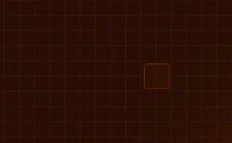
earlier observed state
who is a product leader at Databricks. We are going to be doing a deep dive on Genie ontology and the capabilities for00:10.00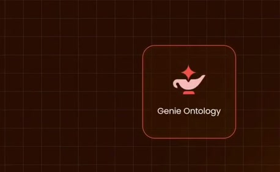
intermediate observed state
who is a product leader at Databricks. We are going to be doing a deep dive on Genie ontology and the capabilities for00:12.00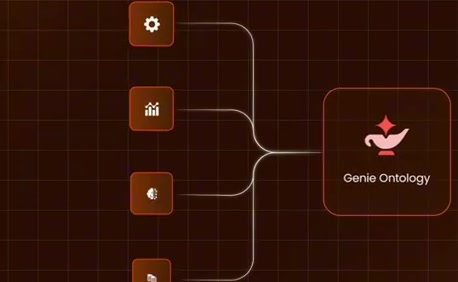
intermediate observed state
We are going to be doing a deep dive on Genie ontology and the capabilities for co-working with Genie. Thank you so much00:14.00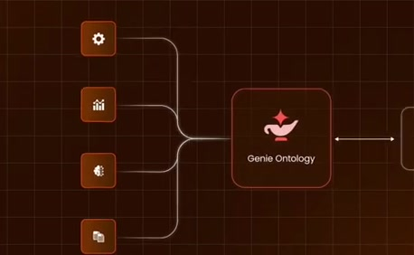
intermediate observed state
We are going to be doing a deep dive on Genie ontology and the capabilities for co-working with Genie. Thank you so much for being here, Elise.00:16.00later observed state
Genie ontology and the capabilities for co-working with Genie. Thank you so much for being here, Elise. >> Thank you for having me. Excited to talk Reading order, reveal order and source observations
{
"status": "Sequence-level source observations are attached in prior_source_observations. The family motion grammar is a proposed reusable pattern, not a frame-exact claim about this instance."
}Reading direction and actual reveal order are separate. Prefer the source-specific observation when reconstructing; align adaptation order to what the new narration introduces.
6 source change windows: before / near transition / after
Estimated anchor 00:08.00
Estimated anchor 00:09.20
after · 00:10.20
Estimated anchor 00:10.50
Estimated anchor 00:12.00
Estimated anchor 00:13.50
Estimated anchor 00:15.00
near-transition · 00:15.27 Direct source images; templates are editorial interpretations. Exact spoken triggers, detailed object annotations and micro-transition completeness are not certified.
Entry metadata · Template and source-bound example
02. Genie Ontology topic callout · 00:27.00–00:35.00
calloutexplanatory-graphic-or-overlayTeaching purpose: Name the topic while the host frames the conversation.
Relationship: spoken concept → concise emphasis
Observed reveal order: See source-state images and sequence observations; a frame-exact object-change order is not yet asserted.
Original transcript near this graphic (overlapping segments):
>> Before we dive into Genie ontology, I think it might be worth it for viewers to have a quick little 101 lesson on what Genie is.
Original state images
00:27.20earlier observed state
>> Before we dive into Genie ontology, I think it might be worth it for viewers to have a quick little 101 lesson on what Genie00:29.00intermediate observed state
>> Before we dive into Genie ontology, I think it might be worth it for viewers to have a quick little 101 lesson on what Genie00:32.00intermediate observed state
to have a quick little 101 lesson on what Genie00:34.00later observed state
to have a quick little 101 lesson on what Genie is. >> Yeah, absolutely. So, I come from the Reading order, reveal order and source observations
{
"status": "Sequence-level source observations are attached in prior_source_observations. The family motion grammar is a proposed reusable pattern, not a frame-exact claim about this instance."
}Reading direction and actual reveal order are separate. Prefer the source-specific observation when reconstructing; align adaptation order to what the new narration introduces.
2 source change windows: before / near transition / after
Estimated anchor 00:27.00
near-transition · 00:27.27 Estimated anchor 00:30.00
near-transition · 00:30.27 Direct source images; templates are editorial interpretations. Exact spoken triggers, detailed object annotations and micro-transition completeness are not certified.
Entry metadata · Template and source-bound example
03. Define the agentic assistant · 00:38.00–00:43.35
product-definitionexplanatory-graphic-or-overlayTeaching purpose: Introduce the product role before concrete mechanisms.
Relationship: name → role → concrete capability
Observed reveal order: See source-state images and sequence observations; a frame-exact object-change order is not yet asserted.
Original transcript near this graphic (overlapping segments):
is. >> Yeah, absolutely. So, I come from the Genie 1 world. Genie 1 is our AI co-worker for business users. It It
Original state images
00:38.30earlier observed state
is. >> Yeah, absolutely. So, I come from the Genie 1 world. Genie 1 is our AI00:39.80intermediate observed state
is. >> Yeah, absolutely. So, I come from the Genie 1 world. Genie 1 is our AI co-worker for business users. It It00:41.50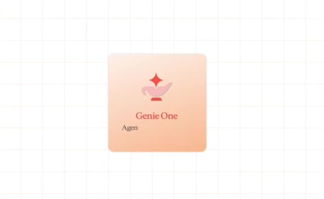
intermediate observed state
>> Yeah, absolutely. So, I come from the Genie 1 world. Genie 1 is our AI co-worker for business users. It It00:43.10later observed state
>> Yeah, absolutely. So, I come from the Genie 1 world. Genie 1 is our AI co-worker for business users. It It connects to your data and tools. It Reading order, reveal order and source observations
{
"status": "Sequence-level source observations are attached in prior_source_observations. The family motion grammar is a proposed reusable pattern, not a frame-exact claim about this instance."
}Reading direction and actual reveal order are separate. Prefer the source-specific observation when reconstructing; align adaptation order to what the new narration introduces.
1 source change windows: before / near transition / after
Estimated anchor 00:39.80
near-transition · 00:40.07 Direct source images; templates are editorial interpretations. Exact spoken triggers, detailed object annotations and micro-transition completeness are not certified.
Entry metadata · Template and source-bound example
04. Data and tools feed the assistant · 00:43.35–00:46.50
converging-sourcesexplanatory-graphic-or-overlayTeaching purpose: Give the definition tangible input classes.
Relationship: many inputs → shared hub
Observed reveal order: See source-state images and sequence observations; a frame-exact object-change order is not yet asserted.
Original transcript near this graphic (overlapping segments):
Genie 1 world. Genie 1 is our AI co-worker for business users. It It connects to your data and tools. It answers questions about your business.
Original state images
00:43.50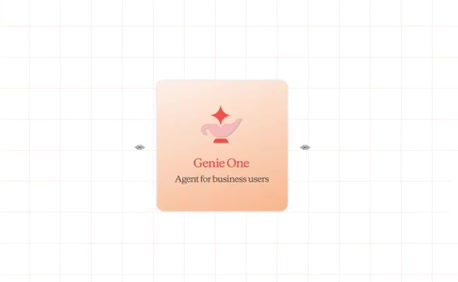
earlier observed state
Genie 1 world. Genie 1 is our AI co-worker for business users. It It connects to your data and tools. It00:44.30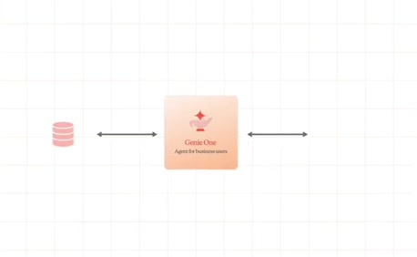
intermediate observed state
Genie 1 world. Genie 1 is our AI co-worker for business users. It It connects to your data and tools. It answers questions about your business.00:45.20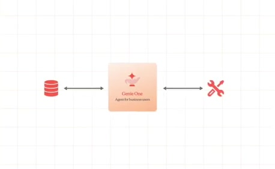
intermediate observed state
Genie 1 world. Genie 1 is our AI co-worker for business users. It It connects to your data and tools. It answers questions about your business.00:46.30later observed state
co-worker for business users. It It connects to your data and tools. It answers questions about your business. It acts on the answers that it gives Reading order, reveal order and source observations
{
"status": "Sequence-level source observations are attached in prior_source_observations. The family motion grammar is a proposed reusable pattern, not a frame-exact claim about this instance."
}Reading direction and actual reveal order are separate. Prefer the source-specific observation when reconstructing; align adaptation order to what the new narration introduces.
2 source change windows: before / near transition / after
Estimated anchor 00:43.35
Estimated anchor 00:46.00
Direct source images; templates are editorial interpretations. Exact spoken triggers, detailed object annotations and micro-transition completeness are not certified.
Entry metadata · Template and source-bound example
05. Question, answer and suggested action · 00:46.50–00:50.80
worked-exampleexplanatory-graphic-or-overlayTeaching purpose: Make the abstract capability concrete with a chat-style example.
Relationship: question → reasoning/result → action
Observed reveal order: See source-state images and sequence observations; a frame-exact object-change order is not yet asserted.
Original transcript near this graphic (overlapping segments):
connects to your data and tools. It answers questions about your business. It acts on the answers that it gives you, all within the governance framework
Original state images
00:46.60earlier observed state
co-worker for business users. It It connects to your data and tools. It answers questions about your business. It acts on the answers that it gives00:47.60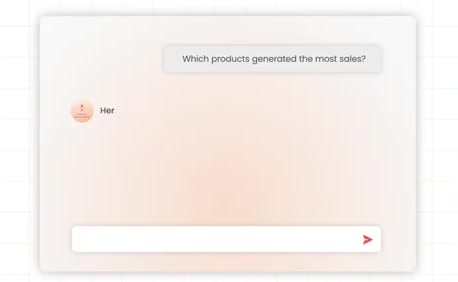
intermediate observed state
co-worker for business users. It It connects to your data and tools. It answers questions about your business. It acts on the answers that it gives00:48.90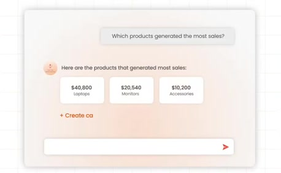
intermediate observed state
connects to your data and tools. It answers questions about your business. It acts on the answers that it gives you, all within the governance framework00:50.60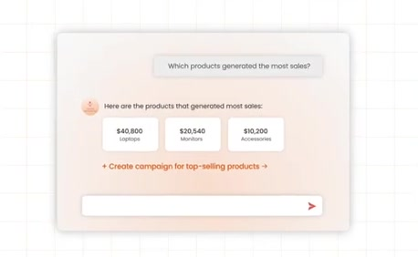
later observed state
answers questions about your business. It acts on the answers that it gives you, all within the governance framework that you already have. But, Genie 1 sits Reading order, reveal order and source observations
{
"status": "Sequence-level source observations are attached in prior_source_observations. The family motion grammar is a proposed reusable pattern, not a frame-exact claim about this instance."
}Reading direction and actual reveal order are separate. Prefer the source-specific observation when reconstructing; align adaptation order to what the new narration introduces.
3 source change windows: before / near transition / after
Estimated anchor 00:47.65
Estimated anchor 00:48.85
Estimated anchor 00:50.60
Direct source images; templates are editorial interpretations. Exact spoken triggers, detailed object annotations and micro-transition completeness are not certified.
Entry metadata · Template and source-bound example
06. Governed capability enclosure · 00:50.80–00:54.80
governance-boundaryexplanatory-graphic-or-overlayTeaching purpose: Constrain the capability rather than suggesting unrestricted action.
Relationship: capability inside a constraint
Observed reveal order: See source-state images and sequence observations; a frame-exact object-change order is not yet asserted.
Original transcript near this graphic (overlapping segments):
It acts on the answers that it gives you, all within the governance framework that you already have. But, Genie 1 sits in a larger stack of of AI co-workers
Original state images
00:50.90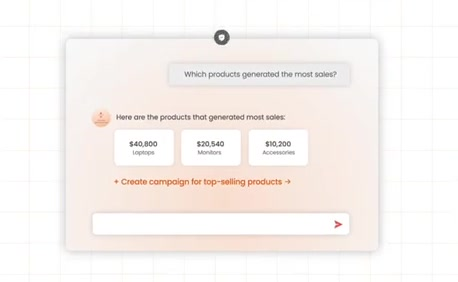
earlier observed state
answers questions about your business. It acts on the answers that it gives you, all within the governance framework that you already have. But, Genie 1 sits00:51.60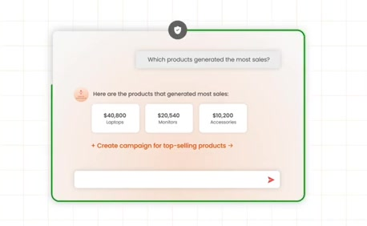
intermediate observed state
answers questions about your business. It acts on the answers that it gives you, all within the governance framework that you already have. But, Genie 1 sits00:53.00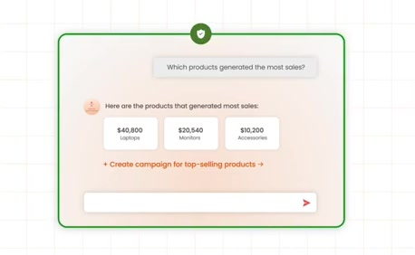
intermediate observed state
It acts on the answers that it gives you, all within the governance framework that you already have. But, Genie 1 sits in a larger stack of of AI co-workers00:54.50later observed state
you, all within the governance framework that you already have. But, Genie 1 sits in a larger stack of of AI co-workers Reading order, reveal order and source observations
{
"status": "Sequence-level source observations are attached in prior_source_observations. The family motion grammar is a proposed reusable pattern, not a frame-exact claim about this instance."
}Reading direction and actual reveal order are separate. Prefer the source-specific observation when reconstructing; align adaptation order to what the new narration introduces.
1 source change windows: before / near transition / after
Estimated anchor 00:53.80
Direct source images; templates are editorial interpretations. Exact spoken triggers, detailed object annotations and micro-transition completeness are not certified.
Entry metadata · Template and source-bound example
07. Shared foundation with depth · 00:54.80–01:01.50
product-familyexplanatory-graphic-or-overlayTeaching purpose: Establish shared family context before peers separate.
Relationship: shared foundation → different roles
Observed reveal order: Front card at a tilted plane → Additional layers visible behind the front card → Hold the shared stack before peer spread
Original transcript near this graphic (overlapping segments):
that you already have. But, Genie 1 sits in a larger stack of of AI co-workers and other AI tools on Databricks. So, if for example, if Genie 1 is our agent for
Original state images
00:54.90earlier observed state
you, all within the governance framework that you already have. But, Genie 1 sits in a larger stack of of AI co-workers00:55.20intermediate observed state
you, all within the governance framework that you already have. But, Genie 1 sits in a larger stack of of AI co-workers00:55.80intermediate observed state
you, all within the governance framework that you already have. But, Genie 1 sits in a larger stack of of AI co-workers00:57.00intermediate observed state
that you already have. But, Genie 1 sits in a larger stack of of AI co-workers and other AI tools on Databricks. So, if00:59.50intermediate observed state
that you already have. But, Genie 1 sits in a larger stack of of AI co-workers and other AI tools on Databricks. So, if for example, if Genie 1 is our agent for01:01.20later observed state
in a larger stack of of AI co-workers and other AI tools on Databricks. So, if for example, if Genie 1 is our agent for Reading order, reveal order and source observations
{
"reading_order": [
"Shared family before peer roles"
],
"observed_reveal_order": [
"Front card at a tilted plane",
"Additional layers visible behind the front card",
"Hold the shared stack before peer spread"
],
"speech_mapping": "The narration places Genie One in a larger family of AI coworkers.",
"confidence": "Prior dense stack samples and source sequence catalog."
}Reading direction and actual reveal order are separate. Prefer the source-specific observation when reconstructing; align adaptation order to what the new narration introduces.
3 source change windows: before / near transition / after
Estimated anchor 00:55.17
Estimated anchor 00:55.83
Estimated anchor 01:01.00
near-transition · 01:01.27 Direct source images; templates are editorial interpretations. Exact spoken triggers, detailed object annotations and micro-transition completeness are not certified.
Entry metadata · Template and source-bound example
08. Separate product-family roles · 01:01.50–01:23.70
product-familyexplanatory-graphic-or-overlayTeaching purpose: Separate roles while retaining family identity and readable card planes.
Relationship: shared foundation → different roles
Observed reveal order: Peers leave the shared stack → Cards settle into separate readable planes → Focus changes among named roles
Original transcript near this graphic (overlapping segments):
and other AI tools on Databricks. So, if for example, if Genie 1 is our agent for business users, Genie code is our agent for technical users. It helps them write code and and do other work within the lakehouse. We also have Genie agents, which can be accessed by both types of users, and they're really focused on domain-specific work. They're They're essentially domain experts, and I can actually cover that in more depth if we want to. And then, if all those
Original state images
01:01.60earlier observed state
in a larger stack of of AI co-workers and other AI tools on Databricks. So, if for example, if Genie 1 is our agent for business users, Genie code is our agent01:03.60intermediate observed state
and other AI tools on Databricks. So, if for example, if Genie 1 is our agent for business users, Genie code is our agent01:05.00intermediate observed state
and other AI tools on Databricks. So, if for example, if Genie 1 is our agent for business users, Genie code is our agent for technical users. It helps them write01:09.00intermediate observed state
business users, Genie code is our agent for technical users. It helps them write code and and do other work within the lakehouse. We also have Genie agents,01:14.00intermediate observed state
code and and do other work within the lakehouse. We also have Genie agents, which can be accessed by both types of users, and they're really focused on01:21.60later observed state
domain-specific work. They're They're essentially domain experts, and I can actually cover that in more depth if we want to. And then, if all those Reading order, reveal order and source observations
{
"reading_order": [
"Named peer products and their roles"
],
"observed_reveal_order": [
"Peers leave the shared stack",
"Cards settle into separate readable planes",
"Focus changes among named roles"
],
"speech_mapping": "The narration distinguishes roles while retaining a shared product-family identity.",
"confidence": "Prior eight-sample source sequence and refined passage evidence."
}Reading direction and actual reveal order are separate. Prefer the source-specific observation when reconstructing; align adaptation order to what the new narration introduces.
6 source change windows: before / near transition / after
Estimated anchor 01:03.52
near-transition · 01:03.77 Estimated anchor 01:04.65
near-transition · 01:04.90 Estimated anchor 01:08.56
near-transition · 01:08.80 Estimated anchor 01:12.45
near-transition · 01:12.70 Estimated anchor 01:17.35
near-transition · 01:17.60 Estimated anchor 01:21.53
near-transition · 01:21.77 Direct source images; templates are editorial interpretations. Exact spoken triggers, detailed object annotations and micro-transition completeness are not certified.
Entry metadata · Template and source-bound example
09. Web Search → Generic Models → Accurate Results · 01:50.00–02:05.00
input-outputexplanatory-graphic-or-overlayTeaching purpose: Illustrate the source’s constrained-context baseline before the business-data counterexample.
Relationship: input → mechanism → outcome
Observed reveal order: Peach model surface grows into place → Model icon/label settle; card briefly larger than settled size → Web-search input and its connector appear → Result card and second connector appear → Complete three-card flow holds
Original transcript near this graphic (overlapping segments):
then we'll talk about Databricks' perspective on how to solve it. Generic models are really good at searching the web or a a code base, anything that's got a really constrained space. But when we start to ask questions about our business, we often get quite strange
Original state images
01:50.30Only a tiny peach model surface is visible.
then we'll talk about Databricks' perspective on how to solve it. Generic models are really good at searching the01:51.50Model card, icon and label visible at larger transient scale.
then we'll talk about Databricks' perspective on how to solve it. Generic models are really good at searching the01:53.00Model card settled by itself.
perspective on how to solve it. Generic models are really good at searching the web or a a code base, anything that's01:55.00Web card and first arrow visible; result card still faint.
perspective on how to solve it. Generic models are really good at searching the web or a a code base, anything that's01:57.00Complete flow is readable.
models are really good at searching the web or a a code base, anything that's got a really constrained space. But when02:03.00Completed flow is retained.
got a really constrained space. But when we start to ask questions about our business, we often get quite strange Reading order, reveal order and source observations
{
"reading_order": [
"Web Search",
"Generic Models",
"Accurate Results"
],
"observed_reveal_order": [
"Peach model surface grows into place",
"Model icon/label settle; card briefly larger than settled size",
"Web-search input and its connector appear",
"Result card and second connector appear",
"Complete three-card flow holds"
],
"evidence_notes": {
"110.3": "Only a tiny peach model surface is visible.",
"111.5": "Model card, icon and label visible at larger transient scale.",
"113": "Model card settled by itself.",
"115": "Web card and first arrow visible; result card still faint.",
"117": "Complete flow is readable.",
"123": "Completed flow is retained."
},
"speech_mapping": "The speaker introduces generic models before describing web search. Finished diagram reading direction is not its reveal order.",
"confidence": "Direct visual inspection of source crops at 110.3, 111.5, 113, 115 and 117 seconds."
}Reading direction and actual reveal order are separate. Prefer the source-specific observation when reconstructing; align adaptation order to what the new narration introduces.
3 source change windows: before / near transition / after
Estimated anchor 01:50.50
near-transition · 01:50.73 Estimated anchor 01:55.00
near-transition · 01:55.27 Estimated anchor 01:58.00
near-transition · 01:58.27 Direct source images; templates are editorial interpretations. Exact spoken triggers, detailed object annotations and micro-transition completeness are not certified.
Entry metadata · Template and source-bound example
10. First revenue table versus trusted Finance source · 02:05.00–02:18.00
wrong-sourceexplanatory-graphic-or-overlayTeaching purpose: Expose source authority as the reason a plausible answer can be wrong.
Relationship: question → plausible but wrong asset → wrong answer
Observed reveal order: See source-state images and sequence observations; a frame-exact object-change order is not yet asserted.
Original transcript near this graphic (overlapping segments):
business, we often get quite strange answers. So, for example, it might grab the first revenue table that it finds in some random dashboard rather than the one that finance actually maintains. Uh or if you ask for, you know, a churn rate, it might have no idea that your
Original state images
02:05.20earlier observed state
we start to ask questions about our business, we often get quite strange answers. So, for example, it might grab02:06.70intermediate observed state
we start to ask questions about our business, we often get quite strange answers. So, for example, it might grab the first revenue table that it finds in02:09.00intermediate observed state
business, we often get quite strange answers. So, for example, it might grab the first revenue table that it finds in some random dashboard rather than the02:12.00intermediate observed state
the first revenue table that it finds in some random dashboard rather than the one that finance actually maintains. Uh02:16.50later observed state
some random dashboard rather than the one that finance actually maintains. Uh or if you ask for, you know, a churn rate, it might have no idea that your Reading order, reveal order and source observations
{
"status": "Sequence-level source observations are attached in prior_source_observations. The family motion grammar is a proposed reusable pattern, not a frame-exact claim about this instance."
}Reading direction and actual reveal order are separate. Prefer the source-specific observation when reconstructing; align adaptation order to what the new narration introduces.
3 source change windows: before / near transition / after
Estimated anchor 02:05.00
near-transition · 02:05.27 Estimated anchor 02:08.00
near-transition · 02:08.27 Estimated anchor 02:12.00
near-transition · 02:12.27 Direct source images; templates are editorial interpretations. Exact spoken triggers, detailed object annotations and micro-transition completeness are not certified.
Entry metadata · Template and source-bound example
11. Business-specific churn exclusions · 02:18.00–02:27.00
metric-ambiguityexplanatory-graphic-or-overlayTeaching purpose: Show that the metric name alone does not specify the team’s business definition.
Relationship: same term → missing rule → changed interpretation
Observed reveal order: See source-state images and sequence observations; a frame-exact object-change order is not yet asserted.
Original transcript near this graphic (overlapping segments):
or if you ask for, you know, a churn rate, it might have no idea that your team excludes free metrics from that or even that the concept of a free met uh a free trial exists. Sorry, free trials. Uh or if you ask like, "What campaign is
Original state images
02:18.20earlier observed state
one that finance actually maintains. Uh or if you ask for, you know, a churn rate, it might have no idea that your team excludes free metrics from that or02:20.00intermediate observed state
or if you ask for, you know, a churn rate, it might have no idea that your team excludes free metrics from that or even that the concept of a free met uh a02:22.00intermediate observed state
rate, it might have no idea that your team excludes free metrics from that or even that the concept of a free met uh a free trial exists. Sorry, free trials.02:24.50intermediate observed state
team excludes free metrics from that or even that the concept of a free met uh a free trial exists. Sorry, free trials. Uh or if you ask like, "What campaign is02:26.50later observed state
even that the concept of a free met uh a free trial exists. Sorry, free trials. Uh or if you ask like, "What campaign is is performing best?" It might have no Reading order, reveal order and source observations
{
"status": "Sequence-level source observations are attached in prior_source_observations. The family motion grammar is a proposed reusable pattern, not a frame-exact claim about this instance."
}Reading direction and actual reveal order are separate. Prefer the source-specific observation when reconstructing; align adaptation order to what the new narration introduces.
2 source change windows: before / near transition / after
Estimated anchor 02:18.50
near-transition · 02:18.73 Estimated anchor 02:23.00
near-transition · 02:23.27 Direct source images; templates are editorial interpretations. Exact spoken triggers, detailed object annotations and micro-transition completeness are not certified.
Entry metadata · Template and source-bound example
12. Campaign answer based on stale data · 02:27.00–02:39.30
stale-contextexplanatory-graphic-or-overlayTeaching purpose: Distinguish freshness failure from a missing metric definition.
Relationship: prior context → change → mismatch
Observed reveal order: See source-state images and sequence observations; a frame-exact object-change order is not yet asserted.
Original transcript near this graphic (overlapping segments):
free trial exists. Sorry, free trials. Uh or if you ask like, "What campaign is is performing best?" It might have no idea that like the campaigns table is super laggy. So, if you actually want, you know, the latest data, you have to go straight to HubSpot via MCP. And more broadly, all of our companies, you know,
Original state images
02:27.20earlier observed state
even that the concept of a free met uh a free trial exists. Sorry, free trials. Uh or if you ask like, "What campaign is is performing best?" It might have no02:29.00intermediate observed state
free trial exists. Sorry, free trials. Uh or if you ask like, "What campaign is is performing best?" It might have no idea that like the campaigns table is02:32.00intermediate observed state
Uh or if you ask like, "What campaign is is performing best?" It might have no idea that like the campaigns table is super laggy. So, if you actually want,02:35.00intermediate observed state
idea that like the campaigns table is super laggy. So, if you actually want, you know, the latest data, you have to go straight to HubSpot via MCP. And more02:38.50later observed state
you know, the latest data, you have to go straight to HubSpot via MCP. And more broadly, all of our companies, you know, Reading order, reveal order and source observations
{
"status": "Sequence-level source observations are attached in prior_source_observations. The family motion grammar is a proposed reusable pattern, not a frame-exact claim about this instance."
}Reading direction and actual reveal order are separate. Prefer the source-specific observation when reconstructing; align adaptation order to what the new narration introduces.
4 source change windows: before / near transition / after
Estimated anchor 02:27.00
near-transition · 02:27.27 Estimated anchor 02:31.00
near-transition · 02:31.27 Estimated anchor 02:34.00
before · 02:33.73 near-transition · 02:34.27
near-transition · 02:34.27 Estimated anchor 02:37.00
near-transition · 02:37.27after · 02:38.00
Direct source images; templates are editorial interpretations. Exact spoken triggers, detailed object annotations and micro-transition completeness are not certified.
Entry metadata · Template and source-bound example
13. Renamed assets and departed people · 02:54.20–03:03.00
stale-contextexplanatory-graphic-or-overlayTeaching purpose: Show concrete ways business references and institutional context change.
Relationship: prior context → change → mismatch
Observed reveal order: See source-state images and sequence observations; a frame-exact object-change order is not yet asserted.
Original transcript near this graphic (overlapping segments):
that knowledge moves, right? Tables get renamed, documents go stale, people leave the company. So, no matter how sophisticated a model is, and these models are really sophisticated. They
Original state images
02:54.50earlier observed state
heads. And then to make matters worse, that knowledge moves, right? Tables get renamed, documents go stale, people02:56.50intermediate observed state
that knowledge moves, right? Tables get renamed, documents go stale, people leave the company. So, no matter how02:58.50
intermediate observed state
that knowledge moves, right? Tables get renamed, documents go stale, people leave the company. So, no matter how sophisticated a model is, and these03:01.00
intermediate observed state
renamed, documents go stale, people leave the company. So, no matter how sophisticated a model is, and these models are really sophisticated. They03:02.70later observed state
leave the company. So, no matter how sophisticated a model is, and these models are really sophisticated. They can do graduate-level math, but they Reading order, reveal order and source observations
{
"status": "Sequence-level source observations are attached in prior_source_observations. The family motion grammar is a proposed reusable pattern, not a frame-exact claim about this instance."
}Reading direction and actual reveal order are separate. Prefer the source-specific observation when reconstructing; align adaptation order to what the new narration introduces.
3 source change windows: before / near transition / after
Estimated anchor 02:54.50
near-transition · 02:54.73 Estimated anchor 02:57.00
near-transition · 02:57.27 Estimated anchor 03:00.00
near-transition · 03:00.27 after · 03:01.00
after · 03:01.00 Direct source images; templates are editorial interpretations. Exact spoken triggers, detailed object annotations and micro-transition completeness are not certified.
Entry metadata · Template and source-bound example
14. Add context to the data-to-result route · 03:03.00–03:29.50
context-repairexplanatory-graphic-or-overlayTeaching purpose: Connect the missing business context to the existing question/result mechanism.
Relationship: broken route → missing context → repaired route
Observed reveal order: See source-state images and sequence observations; a frame-exact object-change order is not yet asserted.
Original transcript near this graphic (overlapping segments):
sophisticated a model is, and these models are really sophisticated. They can do graduate-level math, but they struggle to answer business questions because they're missing that critical context. Uh but Genie was built for exactly those types of questions, and it helps that we've been working on this this context problem for a long time. Uh Genie understands your your data sources, your definitions, even who's most authoritative when it comes to drafting those definitions, and we do that through the Genie ontology.
Original state images
03:03.30earlier observed state
sophisticated a model is, and these models are really sophisticated. They can do graduate-level math, but they03:06.00intermediate observed state
models are really sophisticated. They can do graduate-level math, but they struggle to answer business questions because they're missing that critical03:10.00intermediate observed state
struggle to answer business questions because they're missing that critical context. Uh but Genie was built for03:18.00intermediate observed state
helps that we've been working on this this context problem for a long time. Uh Genie understands your your data03:23.00intermediate observed state
Genie understands your your data sources, your definitions, even who's most authoritative when it comes to03:28.00later observed state
most authoritative when it comes to drafting those definitions, and we do that through the Genie ontology. The ontology is a is a unified context Reading order, reveal order and source observations
{
"status": "Sequence-level source observations are attached in prior_source_observations. The family motion grammar is a proposed reusable pattern, not a frame-exact claim about this instance."
}Reading direction and actual reveal order are separate. Prefer the source-specific observation when reconstructing; align adaptation order to what the new narration introduces.
5 source change windows: before / near transition / after
Estimated anchor 03:04.00
near-transition · 03:04.27 Estimated anchor 03:09.00
near-transition · 03:09.27 Estimated anchor 03:16.00
near-transition · 03:16.27 after · 03:17.00
after · 03:17.00
Estimated anchor 03:22.00
near-transition · 03:22.27 Estimated anchor 03:26.00
near-transition · 03:26.27 Direct source images; templates are editorial interpretations. Exact spoken triggers, detailed object annotations and micro-transition completeness are not certified.
Entry metadata · Template and source-bound example
15. Shared modeled and learned context layer · 03:29.50–03:54.37
architecture-focusexplanatory-graphic-or-overlayTeaching purpose: Locate modeled and learned context within the broader architecture.
Relationship: system overview → located detail
Observed reveal order: See source-state images and sequence observations; a frame-exact object-change order is not yet asserted.
Original transcript near this graphic (overlapping segments):
drafting those definitions, and we do that through the Genie ontology. The ontology is a is a unified context layer that gives Genie a a business aware map of your organization. And it brings together two categories of context. We have modeled ontology, and then we have learned ontology. On the modeled side, uh this is really where you need to catalog semantics come into play. It's human-curated context that someone certified and and governed.
Original state images
03:29.80earlier observed state
drafting those definitions, and we do that through the Genie ontology. The ontology is a is a unified context03:35.00intermediate observed state
The ontology is a is a unified context layer that gives Genie a a business aware map of your organization. And it brings together two categories of03:41.00
intermediate observed state
aware map of your organization. And it brings together two categories of context. We have modeled ontology, and then we have learned ontology.03:48.00intermediate observed state
On the modeled side, uh this is really where you need to catalog semantics come into play. It's human-curated context03:53.50later observed state
into play. It's human-curated context that someone certified and and governed. And there are three components that are Reading order, reveal order and source observations
{
"status": "Sequence-level source observations are attached in prior_source_observations. The family motion grammar is a proposed reusable pattern, not a frame-exact claim about this instance."
}Reading direction and actual reveal order are separate. Prefer the source-specific observation when reconstructing; align adaptation order to what the new narration introduces.
4 source change windows: before / near transition / after
Estimated anchor 03:29.50
near-transition · 03:29.73 Estimated anchor 03:35.00
near-transition · 03:35.27 Estimated anchor 03:41.00
near-transition · 03:41.27 Estimated anchor 03:48.00
near-transition · 03:48.27 Direct source images; templates are editorial interpretations. Exact spoken triggers, detailed object annotations and micro-transition completeness are not certified.
Entry metadata · Template and source-bound example
16. Move inside the architecture to modeled context · 03:54.37–04:09.00
architecture-focusexplanatory-graphic-or-overlayTeaching purpose: Preserve the overview while shifting focus to a named component.
Relationship: system overview → located detail
Observed reveal order: Complete architecture established → Inner diagram camera moves toward modeled context → Detailed modeled-context surface replaces the overview focus
Original transcript near this graphic (overlapping segments):
into play. It's human-curated context that someone certified and and governed. And there are three components that are worth talking about. Uh the first is metric views. They form your your governed reusable KPI layer. So, it's a certified single source of truth definition for your key business metrics stored as open format Unity Catalog
Original state images
03:54.40earlier observed state
into play. It's human-curated context that someone certified and and governed. And there are three components that are worth talking about. Uh the first is03:55.00intermediate observed state
into play. It's human-curated context that someone certified and and governed. And there are three components that are worth talking about. Uh the first is03:56.10intermediate observed state
into play. It's human-curated context that someone certified and and governed. And there are three components that are worth talking about. Uh the first is metric views. They form your your03:59.00intermediate observed state
And there are three components that are worth talking about. Uh the first is metric views. They form your your governed reusable KPI layer. So, it's a04:04.00intermediate observed state
metric views. They form your your governed reusable KPI layer. So, it's a certified single source of truth definition for your key business metrics04:08.00later observed state
certified single source of truth definition for your key business metrics stored as open format Unity Catalog Reading order, reveal order and source observations
{
"reading_order": [
"Shared architecture",
"Modeled context detail"
],
"observed_reveal_order": [
"Complete architecture established",
"Inner diagram camera moves toward modeled context",
"Detailed modeled-context surface replaces the overview focus"
],
"speech_mapping": "Focus follows the named modeled-context component while the presenter stays outside the diagram camera.",
"confidence": "Prior dense camera samples and source sequence catalog."
}Reading direction and actual reveal order are separate. Prefer the source-specific observation when reconstructing; align adaptation order to what the new narration introduces.
3 source change windows: before / near transition / after
Estimated anchor 03:54.37
near-transition · 03:54.63 Estimated anchor 03:56.10
near-transition · 03:56.33 Estimated anchor 03:59.00
near-transition · 03:59.27 Direct source images; templates are editorial interpretations. Exact spoken triggers, detailed object annotations and micro-transition completeness are not certified.
Entry metadata · Template and source-bound example
17. Metric Views, Pages, Domains and governing layer · 04:09.00–05:33.50
governed-hierarchyexplanatory-graphic-or-overlayTeaching purpose: Build a concrete hierarchy of curated semantic objects rather than decorative graph nodes.
Relationship: governing parent → peers → logical groups
Observed reveal order: See source-state images and sequence observations; a frame-exact object-change order is not yet asserted.
Original transcript near this graphic (overlapping segments):
definition for your key business metrics stored as open format Unity Catalog objects. So, for example, you know, this is how we slice and dice revenue. And and metric views are fully GA'd. Pages are a bit newer. Uh it's the it's the qualitative equivalent of a metric view. I think of them as wiki pages in in Unity Catalog. So, if a metric view defines how we slice and dice revenue, a page might tell you, say, the difference between incremental and attributed revenue. Uh and these are in beta and it is actually super easy to get started. You can use Genie code to actually get started on creating your pages. And then finally, domains uh allow you to do tag-based logical collections of assets, uh both Unity Catalog and workspace assets by things like business unit or geo or function. So, you might have a finance domain or you might have a product team domain. And an asset can live in multiple domains. And it's really helpful for reducing the agent's search space. So, if someone asks a question about finance, you know, we can start from from the finance domain. So, together, metric views, pages, and domains form this certified authoritative baseline. But it's hard, if not impossible, to try to codify the entire organization's knowledge that way, to have a centralized data team responsible for codifying the the concepts that every individual team are are kind of experts in. So, we supplement the modeled ontology
Original state images
04:09.30earlier observed state
certified single source of truth definition for your key business metrics stored as open format Unity Catalog objects. So, for example, you know, this04:17.00intermediate observed state
is how we slice and dice revenue. And and metric views are fully GA'd. Pages are a bit newer. Uh it's the it's04:24.00intermediate observed state
the qualitative equivalent of a metric view. I think of them as wiki pages in in Unity Catalog. So, if a metric view04:43.00intermediate observed state
You can use Genie code to actually get started on creating your pages. And then finally, domains uh allow you to do05:09.00intermediate observed state
question about finance, you know, we can start from from the finance domain. So, together, metric views, pages, and05:24.00later observed state
if not impossible, to try to codify the entire organization's knowledge that way, to have a centralized data team responsible for codifying the the Reading order, reveal order and source observations
{
"status": "Sequence-level source observations are attached in prior_source_observations. The family motion grammar is a proposed reusable pattern, not a frame-exact claim about this instance."
}Reading direction and actual reveal order are separate. Prefer the source-specific observation when reconstructing; align adaptation order to what the new narration introduces.
8 source change windows: before / near transition / after
Estimated anchor 04:09.00
near-transition · 04:09.27 Estimated anchor 04:16.00
near-transition · 04:16.27 Estimated anchor 04:23.00
near-transition · 04:23.27 Estimated anchor 04:41.00
near-transition · 04:41.27 Estimated anchor 04:52.00
near-transition · 04:52.27after · 04:53.00
Estimated anchor 05:07.00
before · 05:06.73 near-transition · 05:07.27
near-transition · 05:07.27 Estimated anchor 05:15.00
near-transition · 05:15.27 Estimated anchor 05:22.00
before · 05:21.73 near-transition · 05:22.27
near-transition · 05:22.27 Direct source images; templates are editorial interpretations. Exact spoken triggers, detailed object annotations and micro-transition completeness are not certified.
Entry metadata · Template and source-bound example
18. Context learned from existing work · 05:33.50–05:53.00
learned-signalsexplanatory-graphic-or-overlayTeaching purpose: Introduce the evidence sources that supply inferred contextual signals.
Relationship: work evidence → contextual signals
Observed reveal order: See source-state images and sequence observations; a frame-exact object-change order is not yet asserted.
Original transcript near this graphic (overlapping segments):
are kind of experts in. So, we supplement the modeled ontology with what we call learned knowledge. Specifically, we extract ontology snippets from your dashboards, your SQL queries, your Genie agents, notebooks, all the work that people are doing day in and and day out within and outside of Databricks. So, for example, you know, the fact that someone joins table A and
Original state images
05:34.00earlier observed state
concepts that every individual team are are kind of experts in. So, we supplement the modeled ontology with what we call learned knowledge.05:40.00intermediate observed state
with what we call learned knowledge. Specifically, we extract ontology snippets from your dashboards, your SQL05:44.00intermediate observed state
Specifically, we extract ontology snippets from your dashboards, your SQL queries, your Genie agents, notebooks,05:48.00intermediate observed state
snippets from your dashboards, your SQL queries, your Genie agents, notebooks, all the work that people are doing day in and and day out within and outside of05:52.00later observed state
all the work that people are doing day in and and day out within and outside of Databricks. So, for example, you know, the fact that someone joins table A and Reading order, reveal order and source observations
{
"status": "Sequence-level source observations are attached in prior_source_observations. The family motion grammar is a proposed reusable pattern, not a frame-exact claim about this instance."
}Reading direction and actual reveal order are separate. Prefer the source-specific observation when reconstructing; align adaptation order to what the new narration introduces.
3 source change windows: before / near transition / after
Estimated anchor 05:34.00
near-transition · 05:34.27 Estimated anchor 05:40.00
near-transition · 05:40.27 Estimated anchor 05:47.00
near-transition · 05:47.27 Direct source images; templates are editorial interpretations. Exact spoken triggers, detailed object annotations and micro-transition completeness are not certified.
Entry metadata · Template and source-bound example
19. Joins, comments, sharing and popular queries · 05:53.00–06:19.00
learned-signalsexplanatory-graphic-or-overlayTeaching purpose: Explain useful signals through recognizable work actions.
Relationship: work evidence → contextual signals
Observed reveal order: See source-state images and sequence observations; a frame-exact object-change order is not yet asserted.
Original transcript near this graphic (overlapping segments):
Databricks. So, for example, you know, the fact that someone joins table A and table B is very valuable information for a Genie. And then if they add maybe a comment, that's probably making it even more valuable. And then if they share that with other people, we know it's probably valuable for those other people. And then if that query becomes very, very popular, we can surmise that it's probably a pretty authoritative source of information. So, a snippet could be a join hint, but it could also
Original state images
05:53.30earlier observed state
in and and day out within and outside of Databricks. So, for example, you know, the fact that someone joins table A and05:59.50intermediate observed state
the fact that someone joins table A and table B is very valuable information for a Genie. And then if they add maybe a comment, that's probably making it even06:05.50intermediate observed state
comment, that's probably making it even more valuable. And then if they share that with other people, we know it's probably valuable for those other06:12.00intermediate observed state
probably valuable for those other people. And then if that query becomes very, very popular, we can surmise that it's probably a pretty authoritative06:18.00
later observed state
it's probably a pretty authoritative source of information. So, a snippet could be a join hint, but it could also be things like a business rule. So, for Reading order, reveal order and source observations
{
"status": "Sequence-level source observations are attached in prior_source_observations. The family motion grammar is a proposed reusable pattern, not a frame-exact claim about this instance."
}Reading direction and actual reveal order are separate. Prefer the source-specific observation when reconstructing; align adaptation order to what the new narration introduces.
4 source change windows: before / near transition / after
Estimated anchor 05:53.00
near-transition · 05:53.27 Estimated anchor 05:59.00
before · 05:58.73 near-transition · 05:59.27
near-transition · 05:59.27
Estimated anchor 06:05.00
near-transition · 06:05.27 Estimated anchor 06:11.00
near-transition · 06:11.27 Direct source images; templates are editorial interpretations. Exact spoken triggers, detailed object annotations and micro-transition completeness are not certified.
Entry metadata · Template and source-bound example
20. Concrete learned business snippets · 06:19.00–06:42.00
learned-signalsexplanatory-graphic-or-overlayTeaching purpose: Turn inferred context into specific business-knowledge examples.
Relationship: work evidence → contextual signals
Observed reveal order: See source-state images and sequence observations; a frame-exact object-change order is not yet asserted.
Original transcript near this graphic (overlapping segments):
source of information. So, a snippet could be a join hint, but it could also be things like a business rule. So, for example, a lead is only qualified once a meeting is booked, and all that information lives in Salesforce. Or it could be information about, you know, which data is most authoritative. So, for example, you must pull revenue from this finance catalog. Or it could be a metric definition. So, for example, like how might we define churn for our team? And as Genie is amassing all this
Original state images
06:19.30
earlier observed state
source of information. So, a snippet could be a join hint, but it could also be things like a business rule. So, for06:23.00intermediate observed state
could be a join hint, but it could also be things like a business rule. So, for example, a lead is only qualified once a meeting is booked, and all that06:28.00intermediate observed state
meeting is booked, and all that information lives in Salesforce. Or it could be information about, you know, which data is most authoritative. So,06:35.00intermediate observed state
which data is most authoritative. So, for example, you must pull revenue from this finance catalog. Or it could be a metric definition. So, for example, like06:41.00later observed state
metric definition. So, for example, like how might we define churn for our team? And as Genie is amassing all this Reading order, reveal order and source observations
{
"status": "Sequence-level source observations are attached in prior_source_observations. The family motion grammar is a proposed reusable pattern, not a frame-exact claim about this instance."
}Reading direction and actual reveal order are separate. Prefer the source-specific observation when reconstructing; align adaptation order to what the new narration introduces.
3 source change windows: before / near transition / after
Estimated anchor 06:19.00
before · 06:19.00 near-transition · 06:19.27
near-transition · 06:19.27 Estimated anchor 06:26.00
near-transition · 06:26.27 Estimated anchor 06:34.00
near-transition · 06:34.27 Direct source images; templates are editorial interpretations. Exact spoken triggers, detailed object annotations and micro-transition completeness are not certified.
Entry metadata · Template and source-bound example
21. OntoRank and named relevance criteria · 06:42.00–07:18.00
ranked-contextexplanatory-graphic-or-overlayTeaching purpose: Explain why context candidates differ in relevance and authority.
Relationship: candidate context → ranking criteria → relevant context
Observed reveal order: See source-state images and sequence observations; a frame-exact object-change order is not yet asserted.
Original transcript near this graphic (overlapping segments):
how might we define churn for our team? And as Genie is amassing all this information, both this modeled and learned knowledge, it's all going into one single ranking algorithm that we call Ontorank. Given a Given a query that someone posts in an agent, what are the assets that are most likely to be helpful in answering that in that question? So, for example, it looks at things like popularity, certification status, authorship to to try to find the most valuable information, to dedupe against across uh conflicting information, and so on. And it's not just questions that you put
Original state images
06:43.00earlier observed state
metric definition. So, for example, like how might we define churn for our team? And as Genie is amassing all this information, both this modeled and06:50.00intermediate observed state
information, both this modeled and learned knowledge, it's all going into one single ranking algorithm that we call Ontorank.06:54.00intermediate observed state
one single ranking algorithm that we call Ontorank. Given a Given a query that someone posts07:00.00intermediate observed state
Given a Given a query that someone posts in an agent, what are the assets that are most likely to be helpful in answering that in that question? So, for07:09.00
intermediate observed state
example, it looks at things like popularity, certification status, authorship to to try to find the most valuable07:17.00later observed state
to try to find the most valuable information, to dedupe against across uh conflicting information, and so on. And it's not just questions that you put Reading order, reveal order and source observations
{
"status": "Sequence-level source observations are attached in prior_source_observations. The family motion grammar is a proposed reusable pattern, not a frame-exact claim about this instance."
}Reading direction and actual reveal order are separate. Prefer the source-specific observation when reconstructing; align adaptation order to what the new narration introduces.
5 source change windows: before / near transition / after
Estimated anchor 06:43.00
near-transition · 06:43.27 Estimated anchor 06:49.00
before · 06:48.73 near-transition · 06:49.27
near-transition · 06:49.27
Estimated anchor 06:53.00
before · 06:52.73 near-transition · 06:53.27
near-transition · 06:53.27
Estimated anchor 06:59.00
near-transition · 06:59.27
Estimated anchor 07:10.00
near-transition · 07:10.27 Direct source images; templates are editorial interpretations. Exact spoken triggers, detailed object annotations and micro-transition completeness are not certified.
Entry metadata · Template and source-bound example
22. Consumers share the context layer · 07:18.00–07:34.00
architecture-focusexplanatory-graphic-or-overlayTeaching purpose: Return the focused mechanism to the system’s consumers.
Relationship: system overview → located detail
Observed reveal order: See source-state images and sequence observations; a frame-exact object-change order is not yet asserted.
Original transcript near this graphic (overlapping segments):
conflicting information, and so on. And it's not just questions that you put into Genie, it's also any third-party agent that you choose to hook up via our MCP. So, no matter where you're standardizing your end users, you benefit from this semantic layer. And that that benefit is very significant.
Original state images
07:18.30
earlier observed state
information, to dedupe against across uh conflicting information, and so on. And it's not just questions that you put into Genie, it's also any third-party07:22.00intermediate observed state
it's not just questions that you put into Genie, it's also any third-party agent that you choose to hook up via our07:27.00intermediate observed state
into Genie, it's also any third-party agent that you choose to hook up via our MCP. So, no matter where you're standardizing your end users, you07:33.00later observed state
standardizing your end users, you benefit from this semantic layer. And that that benefit is very significant. Reading order, reveal order and source observations
{
"status": "Sequence-level source observations are attached in prior_source_observations. The family motion grammar is a proposed reusable pattern, not a frame-exact claim about this instance."
}Reading direction and actual reveal order are separate. Prefer the source-specific observation when reconstructing; align adaptation order to what the new narration introduces.
2 source change windows: before / near transition / after
Estimated anchor 07:18.00
near-transition · 07:18.27
Estimated anchor 07:26.00
near-transition · 07:26.27 Direct source images; templates are editorial interpretations. Exact spoken triggers, detailed object annotations and micro-transition completeness are not certified.
Entry metadata · Template and source-bound example
23. Source-reported accuracy and runtime comparison · 07:34.00–08:32.00
benchmarkexplanatory-graphic-or-overlayTeaching purpose: Show two evaluation dimensions and retain their historical/source-reported scope.
Relationship: methods × measures → qualified comparison
Observed reveal order: See source-state images and sequence observations; a frame-exact object-change order is not yet asserted.
Original transcript near this graphic (overlapping segments):
benefit from this semantic layer. And that that benefit is very significant. Uh when we benchmark Genie with the ontology against the the strongest models available, it's consistently the top-performing agent for business questions and there were no trick questions in this benchmark. This is just real business questions with real business data and we saw more than 30 percentage point improvement in accuracy over the next best performing model. And it was also a lot quicker. After all, a generic agent has to make up for the fact that it doesn't know your business. So if it's not going to hallucinate, then it explores, right? It samples a bunch of schemas, it runs a bunch of extra queries, it grabs a bunch of documents and it loads all of that into the model's context in case any of it turns out to matter later. But Genie doesn't have to do as much work because it already knows which sources count and how to use them. And and I'm already really confident that as we continue to tune the onto rank algorithm and expand the depth of the ontology, I think this gap is going to is going to only widen. >> Now, I see accuracy,
Original state images
07:34.40earlier observed state
benefit from this semantic layer. And that that benefit is very significant. Uh when we benchmark Genie with the07:36.00intermediate observed state
benefit from this semantic layer. And that that benefit is very significant. Uh when we benchmark Genie with the ontology against the the strongest07:42.00intermediate observed state
ontology against the the strongest models available, it's consistently the top-performing agent for business questions and there were no trick07:50.00intermediate observed state
questions in this benchmark. This is just real business questions with real business data and we saw more than 30 percentage point improvement in accuracy08:10.00intermediate observed state
then it explores, right? It samples a bunch of schemas, it runs a bunch of extra queries, it grabs a bunch of documents and it loads all of that into08:29.00later observed state
really confident that as we continue to tune the onto rank algorithm and expand the depth of the ontology, I think this gap is going to is going to only widen. Reading order, reveal order and source observations
{
"status": "Sequence-level source observations are attached in prior_source_observations. The family motion grammar is a proposed reusable pattern, not a frame-exact claim about this instance."
}Reading direction and actual reveal order are separate. Prefer the source-specific observation when reconstructing; align adaptation order to what the new narration introduces.
6 source change windows: before / near transition / after
Estimated anchor 07:34.50
near-transition · 07:34.73 Estimated anchor 07:41.00
near-transition · 07:41.27 Estimated anchor 07:49.00
near-transition · 07:49.27 Estimated anchor 07:59.00
near-transition · 07:59.27 Estimated anchor 08:10.00
near-transition · 08:10.27 Estimated anchor 08:20.00
near-transition · 08:20.27 Direct source images; templates are editorial interpretations. Exact spoken triggers, detailed object annotations and micro-transition completeness are not certified.
Entry metadata · Template and source-bound example
24. Reuse the benchmark during the follow-up · 08:45.00–09:06.00
benchmarkexplanatory-graphic-or-overlayTeaching purpose: Reuse a familiar chart while the host and guest interpret it.
Relationship: methods × measures → qualified comparison
Observed reveal order: See source-state images and sequence observations; a frame-exact object-change order is not yet asserted.
Original transcript near this graphic (overlapping segments):
>> Yeah, the cost component, it's a third version of this slide. Um, it was also favorable if I recall correctly. It ties to the the latency and the token efficiency, which makes sense, right? Genie is doing a lot less trial and error to try to find the assets and to try to make sense of them. So we saw all three all three variables, if you will, um, uh, significantly improved with the ontology. >> Got it. Thank you.
Original state images
08:45.30
earlier observed state
>> Yeah, the cost component, it's a third version of this slide. Um, it was also favorable if I recall correctly. It ties08:52.00intermediate observed state
to the the latency and the token efficiency, which makes sense, right? Genie is doing a lot less trial and error to try to find the assets and to08:59.00intermediate observed state
error to try to find the assets and to try to make sense of them. So we saw all three all three variables, if you will, um,09:05.00later observed state
all three variables, if you will, um, uh, significantly improved with the ontology. >> Got it. Thank you. >> Um, of course, Genie can only learn from Reading order, reveal order and source observations
{
"status": "Sequence-level source observations are attached in prior_source_observations. The family motion grammar is a proposed reusable pattern, not a frame-exact claim about this instance."
}Reading direction and actual reveal order are separate. Prefer the source-specific observation when reconstructing; align adaptation order to what the new narration introduces.
3 source change windows: before / near transition / after
Estimated anchor 08:45.00
near-transition · 08:45.27 Estimated anchor 08:51.00
near-transition · 08:51.27
Estimated anchor 08:59.00
near-transition · 08:59.27 Direct source images; templates are editorial interpretations. Exact spoken triggers, detailed object annotations and micro-transition completeness are not certified.
Entry metadata · Template and source-bound example
25. Access-mode categories · 09:06.00–09:17.00
access-pathsexplanatory-graphic-or-overlayTeaching purpose: Separate input/access modes before showing their internal routes.
Relationship: distinct access modes → different jobs
Observed reveal order: See source-state images and sequence observations; a frame-exact object-change order is not yet asserted.
Original transcript near this graphic (overlapping segments):
ontology. >> Got it. Thank you. >> Um, of course, Genie can only learn from the data that it can actually reach. So it's important to talk a little bit about how Genie also gets access to this data that it's going to make sense of. Uh, we already have text to SQL, uh,
Original state images
09:06.30earlier observed state
ontology. >> Got it. Thank you. >> Um, of course, Genie can only learn from09:09.00intermediate observed state
>> Got it. Thank you. >> Um, of course, Genie can only learn from the data that it can actually reach. So it's important to talk a little bit09:13.00intermediate observed state
the data that it can actually reach. So it's important to talk a little bit about how Genie also gets access to this data that it's going to make sense of.09:16.50later observed state
about how Genie also gets access to this data that it's going to make sense of. Uh, we already have text to SQL, uh, Reading order, reveal order and source observations
{
"status": "Sequence-level source observations are attached in prior_source_observations. The family motion grammar is a proposed reusable pattern, not a frame-exact claim about this instance."
}Reading direction and actual reveal order are separate. Prefer the source-specific observation when reconstructing; align adaptation order to what the new narration introduces.
1 source change windows: before / near transition / after
Estimated anchor 09:06.00
near-transition · 09:06.27 Direct source images; templates are editorial interpretations. Exact spoken triggers, detailed object annotations and micro-transition completeness are not certified.
Entry metadata · Template and source-bound example
26. Existing knowledge versus live-data calculation · 09:17.00–10:04.00
access-pathsexplanatory-graphic-or-overlayTeaching purpose: Contrast finding a documented answer with calculating a new answer over data.
Relationship: distinct access modes → different jobs
Observed reveal order: See source-state images and sequence observations; a frame-exact object-change order is not yet asserted.
Original transcript near this graphic (overlapping segments):
data that it's going to make sense of. Uh, we already have text to SQL, uh, which covers structured data that's governed in Unity Catalog. And I don't want to underestimate how much that matters. You know, a lot of agents are just reciting information that lives in a document. But when you're asking questions about your business, there often already isn't already a document that can answer those questions. That's why you're That's why you're asking. So, Genie is not only doing search, but also querying based on your live operational data. And we have dozens of connectors for that. Plus, actually Josh inspired uh a product that we call custom connectors um that allow the community connectors, sorry. Uh that allows you to create a connector to any generic uh application. So, thank you Josh actually for that idea. That That went straight into the product. Um for data that lives
Original state images
09:17.30earlier observed state
about how Genie also gets access to this data that it's going to make sense of. Uh, we already have text to SQL, uh, which covers structured data that's09:27.00intermediate observed state
want to underestimate how much that matters. You know, a lot of agents are just reciting information that lives in09:37.00
intermediate observed state
often already isn't already a document that can answer those questions. That's why you're That's why you're asking. So, Genie is not only doing search, but also09:42.00intermediate observed state
why you're That's why you're asking. So, Genie is not only doing search, but also querying based on your live operational data. And we have dozens of connectors09:48.00intermediate observed state
querying based on your live operational data. And we have dozens of connectors for that. Plus, actually Josh inspired uh a product that we call custom10:01.00later observed state
create a connector to any generic uh application. So, thank you Josh actually for that idea. That That went straight into the product. Um for data that lives Reading order, reveal order and source observations
{
"status": "Sequence-level source observations are attached in prior_source_observations. The family motion grammar is a proposed reusable pattern, not a frame-exact claim about this instance."
}Reading direction and actual reveal order are separate. Prefer the source-specific observation when reconstructing; align adaptation order to what the new narration introduces.
5 source change windows: before / near transition / after
Estimated anchor 09:17.00
near-transition · 09:17.27 Estimated anchor 09:27.00
near-transition · 09:27.27 Estimated anchor 09:37.00
near-transition · 09:37.27 Estimated anchor 09:47.00
before · 09:46.73 near-transition · 09:47.27
near-transition · 09:47.27 Estimated anchor 10:00.00
near-transition · 10:00.27 Direct source images; templates are editorial interpretations. Exact spoken triggers, detailed object annotations and micro-transition completeness are not certified.
Entry metadata · Template and source-bound example
27. SQL, tools and indexed search routes · 10:04.00–11:19.00
converging-sourcesexplanatory-graphic-or-overlayTeaching purpose: Explain distinct access routes with a shared consumer and explicit source classes.
Relationship: many inputs → shared hub
Observed reveal order: See source-state images and sequence observations; a frame-exact object-change order is not yet asserted.
Original transcript near this graphic (overlapping segments):
into the product. Um for data that lives in in third-party applications, maybe that you want to query live instead of pulling it in and running that text to SQL, we also have uh MCP connectors. Again, they query live. So, you're getting things like the status of a Jira ticket, uh the status of a lead in Salesforce. It's really good for things like that. Uh we have, you know, maybe a dozen a dozen plus um of those MCP connectors. You can hook up a custom connector, and we're planning to to add quite a bit more here. But, when you want to ask a question across a much larger volume of data um or across a lot of sources at once, a bit of a harder question, you need a little bit more horsepower than MCP. Uh and that's what we're building with the search index. It retrieves and ranks everything together instead of leaning on each provider's siloed search capabilities. And it also feeds the ontology. Uh so, we are ensuring that your your tickets and your wikis, whatever it may be, become part of Genie's context. And just as importantly, we enforce the the sources' permissions. So, for example, you're not seeing emails in Genie that you don't actually have access to in your inbox. And that's a big deal because recreating source permissions in Unity Catalog is a is a pretty hard problem.
Original state images
10:04.20earlier observed state
for that idea. That That went straight into the product. Um for data that lives in in third-party applications, maybe10:10.00
intermediate observed state
in in third-party applications, maybe that you want to query live instead of pulling it in and running that text to SQL, we also have uh MCP connectors.10:16.00intermediate observed state
SQL, we also have uh MCP connectors. Again, they query live. So, you're getting things like the status of a Jira ticket, uh the status of a lead in10:25.00intermediate observed state
like that. Uh we have, you know, maybe a dozen a dozen plus um of those MCP connectors. You can hook up a custom10:45.00intermediate observed state
bit of a harder question, you need a little bit more horsepower than MCP. Uh and that's what we're building with the search index. It retrieves and ranks10:53.00intermediate observed state
everything together instead of leaning on each provider's siloed search capabilities. And it also feeds the ontology. Uh so, we are11:14.00later observed state
seeing emails in Genie that you don't actually have access to in your inbox. And that's a big deal because recreating source permissions in Unity Catalog is a Reading order, reveal order and source observations
{
"status": "Sequence-level source observations are attached in prior_source_observations. The family motion grammar is a proposed reusable pattern, not a frame-exact claim about this instance."
}Reading direction and actual reveal order are separate. Prefer the source-specific observation when reconstructing; align adaptation order to what the new narration introduces.
9 source change windows: before / near transition / after
Estimated anchor 10:04.00
near-transition · 10:04.27 Estimated anchor 10:10.00
near-transition · 10:10.27
Estimated anchor 10:15.00
near-transition · 10:15.27
Estimated anchor 10:24.00
before · 10:23.73 near-transition · 10:24.27
near-transition · 10:24.27
Estimated anchor 10:36.00
near-transition · 10:36.27
Estimated anchor 10:44.00
near-transition · 10:44.27 Estimated anchor 10:52.00
near-transition · 10:52.27 Estimated anchor 11:00.00
before · 10:59.73 near-transition · 11:00.27
near-transition · 11:00.27 Estimated anchor 11:10.00
before · 11:09.73 near-transition · 11:10.27after · 11:11.00
near-transition · 11:10.27after · 11:11.00
Direct source images; templates are editorial interpretations. Exact spoken triggers, detailed object annotations and micro-transition completeness are not certified.
Entry metadata · Template and source-bound example
28. Personal memory and visible interface · 11:19.00–11:54.50
feature-evidenceexplanatory-graphic-or-overlayTeaching purpose: Use actual interface evidence to support a named memory capability.
Relationship: stable capability → supporting product evidence
Observed reveal order: See source-state images and sequence observations; a frame-exact object-change order is not yet asserted.
Original transcript near this graphic (overlapping segments):
source permissions in Unity Catalog is a is a pretty hard problem. So, that's organization's context. There's one last thing I want to mention before we actually see this in the product, and that is your personal context. And you can actually ask Genie to preserve things like your preferences, your definitions, and so on through personal memory. And that also allows Genie to, you know, search across chats, things like that. I personally like to save things like style preferences in writing. And And just like all data in the ontology, it's not like this is being shared with people who who shouldn't have access to it. You know, when you steer Genie for yourself, you are impacting only your experience. >> For clarity on this, this means that if
Original state images
11:19.30earlier observed state
source permissions in Unity Catalog is a is a pretty hard problem. So, that's organization's context.11:27.00intermediate observed state
before we actually see this in the product, and that is your personal context. And you can actually ask Genie to preserve things like your11:36.00intermediate observed state
preferences, your definitions, and so on through personal memory. And that also allows Genie to, you know, search across chats, things like that. I personally11:45.00intermediate observed state
preferences in writing. And And just like all data in the ontology, it's not like this is being shared with people who who shouldn't have access to it. You11:53.00later observed state
know, when you steer Genie for yourself, you are impacting only your experience. >> For clarity on this, this means that if Reading order, reveal order and source observations
{
"status": "Sequence-level source observations are attached in prior_source_observations. The family motion grammar is a proposed reusable pattern, not a frame-exact claim about this instance."
}Reading direction and actual reveal order are separate. Prefer the source-specific observation when reconstructing; align adaptation order to what the new narration introduces.
5 source change windows: before / near transition / after
Estimated anchor 11:19.00
near-transition · 11:19.27 Estimated anchor 11:26.00
near-transition · 11:26.27 Estimated anchor 11:35.00
near-transition · 11:35.27 Estimated anchor 11:44.00
near-transition · 11:44.27 Estimated anchor 11:50.00
near-transition · 11:50.27 Direct source images; templates are editorial interpretations. Exact spoken triggers, detailed object annotations and micro-transition completeness are not certified.
Entry metadata · Template and source-bound example
29. First demo chapter · 12:53.00–12:56.50
chapterchapter-navigationTeaching purpose: Provide navigation into the first live product demonstration.
Relationship: chapter transition
Observed reveal order: See source-state images and sequence observations; a frame-exact object-change order is not yet asserted.
Original transcript near this graphic (overlapping segments):
>> Awesome. Um so, let's show this in in the product. Let's see how the ontology actually shows up because it's not It's
Original state images
12:53.30earlier observed state
with fine-tuning certain preferences, too. So. >> Awesome. Um so, let's show this in in the product. Let's see how the ontology12:54.50intermediate observed state
too. So. >> Awesome. Um so, let's show this in in the product. Let's see how the ontology actually shows up because it's not It's12:56.00later observed state
>> Awesome. Um so, let's show this in in the product. Let's see how the ontology actually shows up because it's not It's Reading order, reveal order and source observations
{
"status": "Sequence-level source observations are attached in prior_source_observations. The family motion grammar is a proposed reusable pattern, not a frame-exact claim about this instance."
}Reading direction and actual reveal order are separate. Prefer the source-specific observation when reconstructing; align adaptation order to what the new narration introduces.
1 source change windows: before / near transition / after
Estimated anchor 12:53.00
near-transition · 12:53.27
Direct source images; templates are editorial interpretations. Exact spoken triggers, detailed object annotations and micro-transition completeness are not certified.
Entry metadata · Template and source-bound example
30. Orient in the real Genie interface · 12:56.50–13:42.00
ui-evidenceauthentic-ui-evidenceTeaching purpose: Show the real entry surface before the interaction.
Relationship: actual workflow → visible execution/result
Observed reveal order: See source-state images and sequence observations; a frame-exact object-change order is not yet asserted.
Original transcript near this graphic (overlapping segments):
product. Let's see how the ontology actually shows up because it's not It's not a black box. You can actually see the ontology as Genie is thinking. Uh okay, so I'm in a demo workspace here. Of course, every number is is completely made up for the purposes of of the demo, but this is really how we do a lot of our product work uh here at Databricks. So, what I'm showing you here is the Genie 1 web app. And I As you can see, it's a It's a pretty simple interface. I have my chat here, maybe a few suggested actions. I have my my past chats, agents, all the assets that that available to me. Maybe I'll show a bit of that, um, a bit of that later. I could also just as easily be in our desktop or our mobile app. Uh, but I'm going to start by asking Genie about, uh, adoption. And that sounds like a really simple question, but it's actually not, right? Users move between
Original state images
12:58.00earlier observed state
Um so, let's show this in in the product. Let's see how the ontology actually shows up because it's not It's not a black box. You can actually see the ontology as Genie is thinking. Uh13:10.00intermediate observed state
Of course, every number is is completely made up for the purposes of of the demo, but this is really how we do a lot of our product work uh here at Databricks.13:28.00intermediate observed state
agents, all the assets that that available to me. Maybe I'll show a bit of that, um, a bit of that later. I could also just as easily be in our13:40.00later observed state
uh, adoption. And that sounds like a really simple question, but it's actually not, right? Users move between Reading order, reveal order and source observations
{
"status": "Sequence-level source observations are attached in prior_source_observations. The family motion grammar is a proposed reusable pattern, not a frame-exact claim about this instance."
}Reading direction and actual reveal order are separate. Prefer the source-specific observation when reconstructing; align adaptation order to what the new narration introduces.
3 source change windows: before / near transition / after
Estimated anchor 13:09.00
near-transition · 13:09.27 Estimated anchor 13:28.00
near-transition · 13:28.27 Estimated anchor 13:37.00
near-transition · 13:37.27 Direct source images; templates are editorial interpretations. Exact spoken triggers, detailed object annotations and micro-transition completeness are not certified.
Entry metadata · Template and source-bound example
31. Context-source overlay above the prompt · 13:42.00–14:15.00
converging-sourcesexplanatory-graphic-or-overlayTeaching purpose: Add a conceptual source explanation without pretending the illustration is executed UI.
Relationship: many inputs → shared hub
Observed reveal order: See source-state images and sequence observations; a frame-exact object-change order is not yet asserted.
Original transcript near this graphic (overlapping segments):
really simple question, but it's actually not, right? Users move between web and mobile and Slack and Teams, and Genie needs to know that. Uh, we also have a bunch of out-of-date dashboards that are just floating around. I don't want Genie to pick those up. And of course, I don't just care about Genie adoption. I also care about individual feature adoption, things like MCPs and skills and and Genie needs to know what those features are. So, to answer this, Genie needs to kind of understand our product, understand our metrics. It's going to probably need to pull from a bunch of not only first-party but also third-party data, uh, and then it's going to need to, um, consolidate that in a way that it aligns with the way that I like to write these
Original state images
13:42.30earlier observed state
really simple question, but it's actually not, right? Users move between web and mobile and Slack and Teams, and13:48.00intermediate observed state
web and mobile and Slack and Teams, and Genie needs to know that. Uh, we also have a bunch of out-of-date dashboards that are just floating around. I don't13:55.00intermediate observed state
want Genie to pick those up. And of course, I don't just care about Genie adoption. I also care about individual feature adoption, things like MCPs and14:03.00intermediate observed state
skills and and Genie needs to know what those features are. So, to answer this, Genie needs to kind of understand our product, understand our metrics. It's14:12.00later observed state
third-party data, uh, and then it's going to need to, um, consolidate that in a way that it aligns Reading order, reveal order and source observations
{
"status": "Sequence-level source observations are attached in prior_source_observations. The family motion grammar is a proposed reusable pattern, not a frame-exact claim about this instance."
}Reading direction and actual reveal order are separate. Prefer the source-specific observation when reconstructing; align adaptation order to what the new narration introduces.
5 source change windows: before / near transition / after
Estimated anchor 13:42.00
near-transition · 13:42.27 Estimated anchor 13:48.00
near-transition · 13:48.27 Estimated anchor 13:55.00
near-transition · 13:55.27 Estimated anchor 14:03.00
near-transition · 14:03.27 Estimated anchor 14:10.00
near-transition · 14:10.27 Direct source images; templates are editorial interpretations. Exact spoken triggers, detailed object annotations and micro-transition completeness are not certified.
Entry metadata · Template and source-bound example
32. Question, analysis and source inspection · 14:15.00–16:30.00
ui-evidenceauthentic-ui-evidenceTeaching purpose: Ground the explanation in the actual question and inspection workflow.
Relationship: actual workflow → visible execution/result
Observed reveal order: See source-state images and sequence observations; a frame-exact object-change order is not yet asserted.
Original transcript near this graphic (overlapping segments):
consolidate that in a way that it aligns with the way that I like to write these these write-ups. So, I'm going to get it started. Uh, and then as Genie is running, again, we can we can click into see what it's thinking. Now, you'll notice that was actually a very simple prompt in spite of all the complexity we've been talking about, and that's because I think Genie's going to be able to navigate our data pretty well because we have this ontology, uh, turned on. And we can actually see it, again, in practice. So, uh, it looks like Genie actually started by going straight to our our data sources. It found some potentially relevant tables here. Uh, and then it did go straight into the ontology. So, we've got pages, again, those wiki pages in Unity Catalog. It may end up using some of these in the actual answer. Again, this is just potentially relevant stuff. And then we have knowledge snippets. So, we have those facts about the business that Genie has learned from all sorts of different sources. And you can see there's business terms, metric definitions, something about data quality, another business term. There's even one, this is kind of a preview of some of the stuff that we're playing around with, but one that reaches into GitHub, uh, to get information because it's also a very semantically rich data source. But the key thing is that we're combining this human curated context with this more learned knowledge because again, it's really difficult to try to curate everything for the entire org. Uh I think I also found the thinking trace before we talk about the document. Uh we also looked at Google Drive, we looked at Jira, and then ran a bunch of those SQL queries. Again, very important uh that we are able to query on live operational data and not just not just reading documents. And then like the again, the data is demo, so what it actually produces is not super interesting. Um but we see a bunch of visualizations. It's able to do things like more advanced like cohort retention analyses. It can do things like forecasts. Maybe I can show you that actually. Um it's able to again pull from those third-party sources. So for example, it's pulling from Jira. It's able to do those recommendations. And a really critical thing to mention is that all of the stuff that you see here is data that I actually have access to. So again, Genie isn't creating any sort of special Genie specific permissions. It's simply enforcing our source permissions through Unity Catalog. And that applies also to the ontology uh that that is derived from any assets that are used here. And we can actually see, you know, what was
Original state images
14:22.00earlier observed state
I'm going to get it started. Uh, and then as Genie is running, again, we can we can click into see what it's thinking. Now, you'll notice that was14:41.00intermediate observed state
actually see it, again, in practice. So, uh, it looks like Genie actually started by going straight to our our data sources. It found some potentially15:10.00intermediate observed state
there's business terms, metric definitions, something about data quality, another business term. There's even one, this is kind of a preview of some of the15:45.00intermediate observed state
that we are able to query on live operational data and not just not just reading documents. And then like the again, the data is16:25.00later observed state
permissions. It's simply enforcing our source permissions through Unity Catalog. And that applies also to the ontology uh that that is derived from Reading order, reveal order and source observations
{
"status": "Sequence-level source observations are attached in prior_source_observations. The family motion grammar is a proposed reusable pattern, not a frame-exact claim about this instance."
}Reading direction and actual reveal order are separate. Prefer the source-specific observation when reconstructing; align adaptation order to what the new narration introduces.
3 source change windows: before / near transition / after
Estimated anchor 14:39.00
near-transition · 14:39.27 Estimated anchor 15:08.00
near-transition · 15:08.27 Estimated anchor 15:41.00
near-transition · 15:41.27 Direct source images; templates are editorial interpretations. Exact spoken triggers, detailed object annotations and micro-transition completeness are not certified.
Entry metadata · Template and source-bound example
33. Citations and business definitions · 16:30.00–18:14.00
ui-evidenceauthentic-ui-evidenceTeaching purpose: Inspect supporting evidence rather than treating fluent output as proof.
Relationship: actual workflow → visible execution/result
Observed reveal order: See source-state images and sequence observations; a frame-exact object-change order is not yet asserted.
Original transcript near this graphic (overlapping segments):
any assets that are used here. And we can actually see, you know, what was used to answer this question by popping down here into the citations. So this is everything that Genie ended up pulling from the thinking trace to actually compile that document. So again, we see tables, maybe a couple relevant links from looks like Jira as well as Google Drive. Um this is that personal memory actually. This is how I prefer to write these docs. And then it did end up using some things from the ontology. So if we click in, we can see like my colleague Retta, she's also on the Genie team, she put together this wiki page around the different Genie surfaces, which is highly relevant when we're asking questions about Genie's adoption. So it makes sense that it that it used this. It also makes sense that it that it kind of started from from this kind of information because Genie likes human curated content. We extra trust human curated content, especially because this one has been certified. But, it probably needed to, again, look at those anthology snippets to round out its information. So, if we click in here, we can actually see that snippet in practice. We can get feedback on it. We can see the full definition that Genie learned. We can see that it grabs some information from this particular dashboard, which happens to be authored by our colleague Jeffrey, who is the data scientist working on Genie 1 growth. So, it's not surprising that it has, for example, a super high authority score. Genie is recognizing that Jeffrey does a lot of good work, and Jeffrey's work is often very popular. So, even before he's gone and codified something as a Unity Catalog semantic, we can benefit from this work. And we can even click into his profile if we want to like double-check his his creds on this topic, and we can see he's he's done a lot of kind of work in this space in this growth space. And Genie has also extracted a lot of snippets from the
Original state images
16:31.00earlier observed state
ontology uh that that is derived from any assets that are used here. And we can actually see, you know, what was used to answer this question by popping16:59.00intermediate observed state
some things from the ontology. So if we click in, we can see like my colleague Retta, she's also on the Genie team, she put together this wiki page around the17:27.00intermediate observed state
needed to, again, look at those anthology snippets to round out its information. So, if we click in here, we can actually see that snippet in17:54.00intermediate observed state
score. Genie is recognizing that Jeffrey does a lot of good work, and Jeffrey's work is often very popular. So, even before he's gone and codified something18:11.00later observed state
topic, and we can see he's he's done a lot of kind of work in this space in this growth space. And Genie has also extracted a lot of snippets from the Reading order, reveal order and source observations
{
"status": "Sequence-level source observations are attached in prior_source_observations. The family motion grammar is a proposed reusable pattern, not a frame-exact claim about this instance."
}Reading direction and actual reveal order are separate. Prefer the source-specific observation when reconstructing; align adaptation order to what the new narration introduces.
4 source change windows: before / near transition / after
Estimated anchor 16:30.00
near-transition · 16:30.27 Estimated anchor 16:58.00
near-transition · 16:58.27 Estimated anchor 17:26.00
near-transition · 17:26.27 Estimated anchor 17:52.00
near-transition · 17:52.27 Direct source images; templates are editorial interpretations. Exact spoken triggers, detailed object annotations and micro-transition completeness are not certified.
Entry metadata · Template and source-bound example
34. Follow-up and continuation · 18:14.00–20:23.00
ui-evidenceauthentic-ui-evidenceTeaching purpose: Show continuity of the actual interface workflow.
Relationship: actual workflow → visible execution/result
Observed reveal order: See source-state images and sequence observations; a frame-exact object-change order is not yet asserted.
Original transcript near this graphic (overlapping segments):
this growth space. And Genie has also extracted a lot of snippets from the assets that he has created. But, you know, we don't need to necessarily just take Genie at its word for this this first answer. Maybe we want to ask a question like, you know, adoption seems to be spiking. What is what is the cause of this? And this type of work, again, is really only possible because Genie is computing these results based on our live operational data. So, we're not just, again, reciting information that already lives in a document. So, let's see if it's able to execute this. Great. We have an answer. Um Looks like the growth is real. It's attributing it to the Teams and the Slack apps. And for context, we we opened up Genie to Teams and to Slack and meeting users where they like to do their work. And every time an organization adopts Slack or adopts Teams, you tend to see a pretty wide increase in adoption because you tend to see folks adopting it and across entire channels or even the entire organization. So, it makes sense that this is attributed to to some of the growth. Now, if that adoption is real, I want to know where it's going. So, I'm also going to ask Genie to do a quick forecast. And that forecast is is a more advanced advanced piece of work, right? It would take me a bit of time to actually model this by hand, but Genie is able to do things like forecasting, like root cause analysis, like anomaly detection. So, I just have to ask it to to to perform that task. Uh but what about maybe an analysis that is totally custom to our team? Uh for example, maybe we build a standardized launch scorecards. Every time a new feature launches, we grade it, you know, against the adoption curve of some of our prior features. And for something like that, we could build a skill. A skill is going to run the same workflow repeatedly. And if once I've created a skill, I can also, you know, share it with my teammates so that they can take advantage. And of course, a shared chill is simply going to be governed through Unity Gateway, always going back to that that centralized governance framework. Um so, with that, I think it might be interesting to go back to our slides. Maybe I'll show you a bit more after, but we'll talk through some additional features. >> That's great from a
Original state images
18:16.00earlier observed state
this growth space. And Genie has also extracted a lot of snippets from the assets that he has created. But, you know, we don't need to necessarily just18:30.00intermediate observed state
you know, adoption seems to be spiking. What is what is the cause of this? And this type of work, again, is really only possible because Genie is computing19:10.00intermediate observed state
increase in adoption because you tend to see folks adopting it and across entire channels or even the entire organization. So, it makes sense that this is attributed to to some of the19:45.00intermediate observed state
that task. Uh but what about maybe an analysis that is totally custom to our team? Uh for example, maybe we build a standardized launch scorecards. Every20:18.00later observed state
governance framework. Um so, with that, I think it might be interesting to go back to our slides. Maybe I'll show you a bit more after, but we'll talk through some additional features. Reading order, reveal order and source observations
{
"status": "Sequence-level source observations are attached in prior_source_observations. The family motion grammar is a proposed reusable pattern, not a frame-exact claim about this instance."
}Reading direction and actual reveal order are separate. Prefer the source-specific observation when reconstructing; align adaptation order to what the new narration introduces.
4 source change windows: before / near transition / after
Estimated anchor 18:25.00
near-transition · 18:25.27 Estimated anchor 19:08.00
near-transition · 19:08.27 Estimated anchor 19:40.00
near-transition · 19:40.27 Estimated anchor 20:03.00
near-transition · 20:03.27 Direct source images; templates are editorial interpretations. Exact spoken triggers, detailed object annotations and micro-transition completeness are not certified.
Entry metadata · Template and source-bound example
35. Visibility and business-context callouts · 20:29.00–20:48.00
calloutexplanatory-graphic-or-overlayTeaching purpose: Highlight the host’s named concerns without inventing a mechanism.
Relationship: spoken concept → concise emphasis
Observed reveal order: See source-state images and sequence observations; a frame-exact object-change order is not yet asserted.
Original transcript near this graphic (overlapping segments):
visibility perspective, from an understanding the business perspective, all of that descriptive analytics, if you will, in a much more tailored way. But what happens when you want to go from just looking at data and you actually want to do something with the data?
Original state images
20:29.30earlier observed state
>> That's great from a visibility perspective, from an understanding the business perspective, all of that20:33.00intermediate observed state
understanding the business perspective, all of that descriptive analytics, if you will, in a much more tailored20:38.30intermediate observed state
descriptive analytics, if you will, in a much more tailored way. But what happens when you want to20:44.00later observed state
way. But what happens when you want to go from just looking at data and you actually want to do Reading order, reveal order and source observations
{
"status": "Sequence-level source observations are attached in prior_source_observations. The family motion grammar is a proposed reusable pattern, not a frame-exact claim about this instance."
}Reading direction and actual reveal order are separate. Prefer the source-specific observation when reconstructing; align adaptation order to what the new narration introduces.
2 source change windows: before / near transition / after
Estimated anchor 20:29.00
near-transition · 20:29.27 Estimated anchor 20:38.00
near-transition · 20:38.27 Direct source images; templates are editorial interpretations. Exact spoken triggers, detailed object annotations and micro-transition completeness are not certified.
Entry metadata · Template and source-bound example
36. From answers to outcomes · 20:48.00–21:06.00
chapterchapter-navigationTeaching purpose: Mark the move from answering to acting.
Relationship: chapter transition
Observed reveal order: See source-state images and sequence observations; a frame-exact object-change order is not yet asserted.
Original transcript near this graphic (overlapping segments):
want to do something with the data? >> Yeah, I think that's a good point. It's important that Genie evolve from just doing Q&A into actually becoming a co-worker. So, we're building out a lot in this space. I think we started with the ontology because, frankly, I think that's where the differentiation comes from, but we are also trying to build as much as possible on this co-working side
Original state images
20:48.30earlier observed state
want to do something with the data? >> Yeah, I think that's a good point. It's20:53.00intermediate observed state
>> Yeah, I think that's a good point. It's important that Genie evolve from just doing Q&A into actually becoming a21:00.00intermediate observed state
co-worker. So, we're building out a lot in this space. I think we started with the ontology because, frankly, I think that's where the differentiation comes21:05.00later observed state
that's where the differentiation comes from, but we are also trying to build as much as possible on this co-working side as well. Reading order, reveal order and source observations
{
"status": "Sequence-level source observations are attached in prior_source_observations. The family motion grammar is a proposed reusable pattern, not a frame-exact claim about this instance."
}Reading direction and actual reveal order are separate. Prefer the source-specific observation when reconstructing; align adaptation order to what the new narration introduces.
1 source change windows: before / near transition / after
Estimated anchor 20:48.00
near-transition · 20:48.27 Direct source images; templates are editorial interpretations. Exact spoken triggers, detailed object annotations and micro-transition completeness are not certified.
Entry metadata · Template and source-bound example
37. Document collaboration with real product evidence · 21:06.00–21:48.00
feature-evidenceexplanatory-graphic-or-overlayTeaching purpose: Pair a stable teaching heading with authentic product interaction.
Relationship: stable capability → supporting product evidence
Observed reveal order: See source-state images and sequence observations; a frame-exact object-change order is not yet asserted.
Original transcript near this graphic (overlapping segments):
from, but we are also trying to build as much as possible on this co-working side as well. So, starting with documents, a very popular feature, Uh uh Genie can now co-author documents with you. You can have it start from scratch, give it a template, ask you to fill something out. You can also work with Genie to edit it, and then you can send it to your doc. Your doc is an email, a PDF, Slack, Teams. We do offer inline collaboration, which is what you're seeing here in the GIF. And going forward, we are adding additional collaboration features, such as working with Genie to resolve comments. We are also building additional document types, like slides, spreadsheets, dashboards, and so on. I think dashboard is kind of one that everyone's expecting of Databricks, given given the context that's in Databricks, and we are seeing a lot of demand for that, so we are building it.
Original state images
21:06.30earlier observed state
that's where the differentiation comes from, but we are also trying to build as much as possible on this co-working side as well. So, starting with documents, a very21:15.00intermediate observed state
co-author documents with you. You can have it start from scratch, give it a template, ask you to fill something out. You can also work with Genie to edit it,21:24.00intermediate observed state
Your doc is an email, a PDF, Slack, Teams. We do offer inline collaboration, which is what you're seeing here in the GIF. And going forward, we are adding21:35.00intermediate observed state
as working with Genie to resolve comments. We are also building additional document types, like slides, spreadsheets, dashboards, and so on. I21:46.00later observed state
of Databricks, given given the context that's in Databricks, and we are seeing a lot of demand for that, so we are building it. Reading order, reveal order and source observations
{
"status": "Sequence-level source observations are attached in prior_source_observations. The family motion grammar is a proposed reusable pattern, not a frame-exact claim about this instance."
}Reading direction and actual reveal order are separate. Prefer the source-specific observation when reconstructing; align adaptation order to what the new narration introduces.
5 source change windows: before / near transition / after
Estimated anchor 21:06.00
near-transition · 21:06.27
Estimated anchor 21:15.00
near-transition · 21:15.27 Estimated anchor 21:24.00
near-transition · 21:24.27 Estimated anchor 21:34.00
near-transition · 21:34.27 Estimated anchor 21:42.00
near-transition · 21:42.27 Direct source images; templates are editorial interpretations. Exact spoken triggers, detailed object annotations and micro-transition completeness are not certified.
Entry metadata · Template and source-bound example
38. Third-party work tools · 21:48.00–21:56.00
access-pathsexplanatory-graphic-or-overlayTeaching purpose: Identify the destinations before explaining action and permissions.
Relationship: distinct access modes → different jobs
Observed reveal order: See source-state images and sequence observations; a frame-exact object-change order is not yet asserted.
Original transcript near this graphic (overlapping segments):
a lot of demand for that, so we are building it. Now, documents might live inside of Genie, but of course, a lot of your work doesn't. So, I talked about MCPs to read in data, but of course, you can also use MCPs to write data.
Original state images
21:48.30earlier observed state
a lot of demand for that, so we are building it. Now, documents might live inside of Genie, but of course, a lot of your work21:51.00intermediate observed state
building it. Now, documents might live inside of Genie, but of course, a lot of your work doesn't. So, I talked about MCPs to read21:55.00
later observed state
Genie, but of course, a lot of your work doesn't. So, I talked about MCPs to read in data, but of course, you can also use MCPs to write data. Reading order, reveal order and source observations
{
"status": "Sequence-level source observations are attached in prior_source_observations. The family motion grammar is a proposed reusable pattern, not a frame-exact claim about this instance."
}Reading direction and actual reveal order are separate. Prefer the source-specific observation when reconstructing; align adaptation order to what the new narration introduces.
2 source change windows: before / near transition / after
Estimated anchor 21:48.00
near-transition · 21:48.27 Estimated anchor 21:51.00
before · 21:50.73 near-transition · 21:51.27
near-transition · 21:51.27 Direct source images; templates are editorial interpretations. Exact spoken triggers, detailed object annotations and micro-transition completeness are not certified.
Entry metadata · Template and source-bound example
39. Tool route, gateway and access checks · 21:56.00–22:35.00
permissioned-actionexplanatory-graphic-or-overlayTeaching purpose: Make the control point and action scope explicit.
Relationship: actor → control point → allowed/denied route
Observed reveal order: See source-state images and sequence observations; a frame-exact object-change order is not yet asserted.
Original transcript near this graphic (overlapping segments):
in data, but of course, you can also use MCPs to write data. The interesting thing here, I think, is that MCPs have been our first integration between Genie and Unity Gateway. So, as an administrator, you can decide, you know, this user gets access to this MCP, that user gets access to that MCP, or even this tool, but not that tool, or even more granularly than that. For example, you can use Genie to post to Slack, but you can't, you know, post to these particular channels, or maybe you can push to this GitHub branch, but not those GitHub branches. So, that becomes a pretty granular control for the administrators, and we've only since then expanded on that as we think about more and more centralized governance of
Original state images
21:56.30
earlier observed state
doesn't. So, I talked about MCPs to read in data, but of course, you can also use MCPs to write data. The interesting thing here, I think, is22:02.00intermediate observed state
The interesting thing here, I think, is that MCPs have been our first integration between Genie and Unity Gateway. So, as an administrator, you22:07.00intermediate observed state
integration between Genie and Unity Gateway. So, as an administrator, you can decide, you know, this user gets access to this MCP, that user gets22:13.00intermediate observed state
access to this MCP, that user gets access to that MCP, or even this tool, but not that tool, or even more granularly than that. For example, you22:20.00intermediate observed state
granularly than that. For example, you can use Genie to post to Slack, but you can't, you know, post to these particular channels, or maybe you22:33.00later observed state
a pretty granular control for the administrators, and we've only since then expanded on that as we think about more and more centralized governance of Reading order, reveal order and source observations
{
"status": "Sequence-level source observations are attached in prior_source_observations. The family motion grammar is a proposed reusable pattern, not a frame-exact claim about this instance."
}Reading direction and actual reveal order are separate. Prefer the source-specific observation when reconstructing; align adaptation order to what the new narration introduces.
6 source change windows: before / near transition / after
Estimated anchor 21:56.00
near-transition · 21:56.27 Estimated anchor 22:01.00
near-transition · 22:01.27 Estimated anchor 22:06.00
near-transition · 22:06.27 Estimated anchor 22:12.00
near-transition · 22:12.27 Estimated anchor 22:18.00
near-transition · 22:18.27 Estimated anchor 22:26.00
near-transition · 22:26.27 Direct source images; templates are editorial interpretations. Exact spoken triggers, detailed object annotations and micro-transition completeness are not certified.
Entry metadata · Template and source-bound example
40. Save a repeatable task as a skill · 22:35.00–22:43.00
feature-evidenceexplanatory-graphic-or-overlayTeaching purpose: Support the feature claim with the visible source interface.
Relationship: stable capability → supporting product evidence
Observed reveal order: See source-state images and sequence observations; a frame-exact object-change order is not yet asserted.
Original transcript near this graphic (overlapping segments):
then expanded on that as we think about more and more centralized governance of these agents. And actually, the very next thing that we are almost about to announce is skill sharing for Genie 1
Original state images
22:35.30
earlier observed state
administrators, and we've only since then expanded on that as we think about more and more centralized governance of these agents. And actually, the very22:38.00intermediate observed state
more and more centralized governance of these agents. And actually, the very next thing that we are almost about to22:42.50later observed state
these agents. And actually, the very next thing that we are almost about to announce is skill sharing for Genie 1 and Genie code through Unity Gateway. Reading order, reveal order and source observations
{
"status": "Sequence-level source observations are attached in prior_source_observations. The family motion grammar is a proposed reusable pattern, not a frame-exact claim about this instance."
}Reading direction and actual reveal order are separate. Prefer the source-specific observation when reconstructing; align adaptation order to what the new narration introduces.
1 source change windows: before / near transition / after
Estimated anchor 22:35.00
near-transition · 22:35.27
Direct source images; templates are editorial interpretations. Exact spoken triggers, detailed object annotations and micro-transition completeness are not certified.
Entry metadata · Template and source-bound example
41. Skill sharing under a governance layer · 22:43.00–23:00.00
permissioned-actionexplanatory-graphic-or-overlayTeaching purpose: Explain distribution and governance as a route and control relationship.
Relationship: actor → control point → allowed/denied route
Observed reveal order: See source-state images and sequence observations; a frame-exact object-change order is not yet asserted.
Original transcript near this graphic (overlapping segments):
next thing that we are almost about to announce is skill sharing for Genie 1 and Genie code through Unity Gateway. So, with Unity Gateway, you again can control which skills are available to which users. You'll be able to eventually pin specific skills to different users, so that those are, for example, always available for those end users, especially new users, and so on.
Original state images
22:43.30earlier observed state
next thing that we are almost about to announce is skill sharing for Genie 1 and Genie code through Unity Gateway.22:46.00intermediate observed state
announce is skill sharing for Genie 1 and Genie code through Unity Gateway. So, with Unity Gateway, you again can22:51.00intermediate observed state
So, with Unity Gateway, you again can control which skills are available to which users. You'll be able to eventually pin specific skills to22:56.00intermediate observed state
which users. You'll be able to eventually pin specific skills to different users, so that those are, for example, always available for those end22:59.50
later observed state
different users, so that those are, for example, always available for those end users, especially new users, and so on. But in general, like I mentioned before, Reading order, reveal order and source observations
{
"status": "Sequence-level source observations are attached in prior_source_observations. The family motion grammar is a proposed reusable pattern, not a frame-exact claim about this instance."
}Reading direction and actual reveal order are separate. Prefer the source-specific observation when reconstructing; align adaptation order to what the new narration introduces.
3 source change windows: before / near transition / after
Estimated anchor 22:43.00
near-transition · 22:43.27 Estimated anchor 22:51.00
near-transition · 22:51.27 Estimated anchor 22:58.00
before · 22:57.73 near-transition · 22:58.27
near-transition · 22:58.27
Direct source images; templates are editorial interpretations. Exact spoken triggers, detailed object annotations and micro-transition completeness are not certified.
Entry metadata · Template and source-bound example
42. Return to the skills interface · 23:00.00–23:11.00
feature-evidenceexplanatory-graphic-or-overlayTeaching purpose: Re-ground the governance explanation in the actual feature surface.
Relationship: stable capability → supporting product evidence
Observed reveal order: See source-state images and sequence observations; a frame-exact object-change order is not yet asserted.
Original transcript near this graphic (overlapping segments):
example, always available for those end users, especially new users, and so on. But in general, like I mentioned before, a skill is a good way to kind of run the same repeatable task the same way over and over uh to share your workflows with your teammates and so on.
Original state images
23:00.30earlier observed state
different users, so that those are, for example, always available for those end users, especially new users, and so on. But in general, like I mentioned before, a skill is a good way to kind of run the23:05.00intermediate observed state
But in general, like I mentioned before, a skill is a good way to kind of run the same repeatable task the same way over and over uh to share your workflows with23:10.00later observed state
same repeatable task the same way over and over uh to share your workflows with your teammates and so on. >> Can you please share a little bit more Reading order, reveal order and source observations
{
"status": "Sequence-level source observations are attached in prior_source_observations. The family motion grammar is a proposed reusable pattern, not a frame-exact claim about this instance."
}Reading direction and actual reveal order are separate. Prefer the source-specific observation when reconstructing; align adaptation order to what the new narration introduces.
1 source change windows: before / near transition / after
Estimated anchor 23:05.00
near-transition · 23:05.27 Direct source images; templates are editorial interpretations. Exact spoken triggers, detailed object annotations and micro-transition completeness are not certified.
Entry metadata · Template and source-bound example
43. Baseline skills, workflows and sharing controls · 23:43.00–24:24.00
peer-categoriesexplanatory-graphic-or-overlayTeaching purpose: Compare three equal-rank governance concerns using matched cards.
Relationship: equal-rank needs or choices
Observed reveal order: Heading near the center → Heading moves upward → First card turns/expands into its readable plane → Equal peer cards appear to its right
Original transcript near this graphic (overlapping segments):
bit as to why this is very relevant? >> Yeah, I think we see demand for for a couple things. Um first is, you know, you want everyone to start with a baseline level of skills or everyone within a group to start with a baseline level of skills. Administrators who are ultimately responsible for people having a good experience with Genie want to ensure that they're set up for success. And part of that includes, if you've got, you know, company-specific workflows, making sure that Genie is set up with those workflows. We also see some demand for, you know, limiting or or controlling how people can share skills. So, for that, uh we'd welcome feedback from customers as they continue to see these roll outs. Um but, we're super open to to any and all sorts of governance around skills. All right. Um so, there's also kind of a
Original state images
23:43.30earlier observed state
decision-makers, just explain a little bit as to why this is very relevant? >> Yeah, I think we see demand for for a couple things. Um first is,23:49.40intermediate observed state
>> Yeah, I think we see demand for for a couple things. Um first is, you know, you want everyone to start with a baseline level of skills or23:50.80intermediate observed state
for a couple things. Um first is, you know, you want everyone to start with a baseline level of skills or everyone within a group to start with a23:52.00intermediate observed state
for a couple things. Um first is, you know, you want everyone to start with a baseline level of skills or everyone within a group to start with a baseline level of skills. Administrators24:05.00intermediate observed state
for success. And part of that includes, if you've got, you know, company-specific workflows, making sure that Genie is set up with those24:14.00
intermediate observed state
workflows. We also see some demand for, you know, limiting or or controlling how people can share skills. So, for that, uh we'd welcome feedback from customers24:22.00later observed state
as they continue to see these roll outs. Um but, we're super open to to any and all sorts of governance around skills. All right. Um so, there's also kind of a Reading order, reveal order and source observations
{
"reading_order": [
"Baseline Skills",
"Custom Workflows",
"Skill-Sharing Controls"
],
"observed_reveal_order": [
"Heading near the center",
"Heading moves upward",
"First card turns/expands into its readable plane",
"Equal peer cards appear to its right"
],
"speech_mapping": "The speaker enumerates baseline skills, company-specific workflows and control of skill sharing.",
"confidence": "Prior dense source samples and sequence catalog; anchors remain estimated."
}Reading direction and actual reveal order are separate. Prefer the source-specific observation when reconstructing; align adaptation order to what the new narration introduces.
6 source change windows: before / near transition / after
Estimated anchor 23:43.00
near-transition · 23:43.27 Estimated anchor 23:49.23
near-transition · 23:49.47 Estimated anchor 23:50.53
near-transition · 23:50.77 Estimated anchor 23:51.43
near-transition · 23:51.67 Estimated anchor 24:04.00
near-transition · 24:04.27 Estimated anchor 24:12.00
near-transition · 24:12.27 Direct source images; templates are editorial interpretations. Exact spoken triggers, detailed object annotations and micro-transition completeness are not certified.
Entry metadata · Template and source-bound example
44. Custom-agent configuration · 24:24.00–24:35.00
feature-evidenceexplanatory-graphic-or-overlayTeaching purpose: Introduce the capability using its visible configuration evidence.
Relationship: stable capability → supporting product evidence
Observed reveal order: See source-state images and sequence observations; a frame-exact object-change order is not yet asserted.
Original transcript near this graphic (overlapping segments):
all sorts of governance around skills. All right. Um so, there's also kind of a step up from a skill. You know, if a skill can perform a task, then an agent performs an entire job. So, a Genie agent bundles data sources, instructions, skills, and memory, and
Original state images
24:24.30earlier observed state
Um but, we're super open to to any and all sorts of governance around skills. All right. Um so, there's also kind of a step up from a skill. You know, if a24:28.00intermediate observed state
All right. Um so, there's also kind of a step up from a skill. You know, if a skill can perform a task, then an agent performs an entire job. So, a Genie24:34.50later observed state
performs an entire job. So, a Genie agent bundles data sources, instructions, skills, and memory, and Reading order, reveal order and source observations
{
"status": "Sequence-level source observations are attached in prior_source_observations. The family motion grammar is a proposed reusable pattern, not a frame-exact claim about this instance."
}Reading direction and actual reveal order are separate. Prefer the source-specific observation when reconstructing; align adaptation order to what the new narration introduces.
2 source change windows: before / near transition / after
Estimated anchor 24:24.00
near-transition · 24:24.27 Estimated anchor 24:30.00
near-transition · 24:30.27 Direct source images; templates are editorial interpretations. Exact spoken triggers, detailed object annotations and micro-transition completeness are not certified.
Entry metadata · Template and source-bound example
45. Sources, instructions, skills and memory · 24:35.00–24:44.00
converging-sourcesexplanatory-graphic-or-overlayTeaching purpose: Identify inputs to a custom agent before showing specialized agents.
Relationship: many inputs → shared hub
Observed reveal order: See source-state images and sequence observations; a frame-exact object-change order is not yet asserted.
Original transcript near this graphic (overlapping segments):
agent bundles data sources, instructions, skills, and memory, and all those come together to create what we might think of as a customized coworker that can answer questions or get work done in a very particular
Original state images
24:35.30earlier observed state
performs an entire job. So, a Genie agent bundles data sources, instructions, skills, and memory, and all those come together to create what24:37.00intermediate observed state
agent bundles data sources, instructions, skills, and memory, and all those come together to create what24:39.50intermediate observed state
instructions, skills, and memory, and all those come together to create what we might think of as a customized coworker that can answer questions or24:43.50
later observed state
we might think of as a customized coworker that can answer questions or get work done in a very particular domain. So, for example, you might have Reading order, reveal order and source observations
{
"status": "Sequence-level source observations are attached in prior_source_observations. The family motion grammar is a proposed reusable pattern, not a frame-exact claim about this instance."
}Reading direction and actual reveal order are separate. Prefer the source-specific observation when reconstructing; align adaptation order to what the new narration introduces.
2 source change windows: before / near transition / after
Estimated anchor 24:35.00
near-transition · 24:35.27 Estimated anchor 24:39.00
near-transition · 24:39.27 Direct source images; templates are editorial interpretations. Exact spoken triggers, detailed object annotations and micro-transition completeness are not certified.
Entry metadata · Template and source-bound example
46. Renewals, launch and finance agents · 24:44.00–25:03.00
agent-delegationexplanatory-graphic-or-overlayTeaching purpose: Make specialization tangible through distinct business jobs.
Relationship: parent → specialists → resources
Observed reveal order: See source-state images and sequence observations; a frame-exact object-change order is not yet asserted.
Original transcript near this graphic (overlapping segments):
coworker that can answer questions or get work done in a very particular domain. So, for example, you might have a a renewals agent that helps your team prep for for QBRs, or a launch agent that helps you kind of track all your feature statuses, or maybe a finance agent that answers questions about about your product's KPIs. And I think most customers are not starting from scratch here. If you've already been using what used to be called Genie Spaces, then
Original state images
24:44.30
earlier observed state
we might think of as a customized coworker that can answer questions or get work done in a very particular domain. So, for example, you might have a a renewals agent that helps your team24:49.00intermediate observed state
domain. So, for example, you might have a a renewals agent that helps your team prep for for QBRs, or a launch agent24:53.50intermediate observed state
a a renewals agent that helps your team prep for for QBRs, or a launch agent that helps you kind of track all your feature statuses, or maybe a finance agent that answers questions about about24:57.00intermediate observed state
feature statuses, or maybe a finance agent that answers questions about about your product's KPIs. And I think most customers are not starting from scratch25:02.50later observed state
your product's KPIs. And I think most customers are not starting from scratch here. If you've already been using what used to be called Genie Spaces, then you've actually been creating agents Reading order, reveal order and source observations
{
"status": "Sequence-level source observations are attached in prior_source_observations. The family motion grammar is a proposed reusable pattern, not a frame-exact claim about this instance."
}Reading direction and actual reveal order are separate. Prefer the source-specific observation when reconstructing; align adaptation order to what the new narration introduces.
3 source change windows: before / near transition / after
Estimated anchor 24:44.00
near-transition · 24:44.27after · 24:45.00
Estimated anchor 24:50.00
before · 24:49.73 near-transition · 24:50.27
near-transition · 24:50.27
Estimated anchor 24:56.00
near-transition · 24:56.27 Direct source images; templates are editorial interpretations. Exact spoken triggers, detailed object annotations and micro-transition completeness are not certified.
Entry metadata · Template and source-bound example
47. Parent agents, children and connected resources · 25:03.00–25:23.00
agent-delegationexplanatory-graphic-or-overlayTeaching purpose: Distinguish delegation from the separate relationship to resources.
Relationship: parent → specialists → resources
Observed reveal order: See source-state images and sequence observations; a frame-exact object-change order is not yet asserted.
Original transcript near this graphic (overlapping segments):
here. If you've already been using what used to be called Genie Spaces, then you've actually been creating agents because Genie Spaces are now Genie Agents, fully accessible from Genie 1 with a couple bells and whistles. It wasn't just a rebrand. So, for example, we're adding the ability to connect a volume to the agent. We're adding MCP connectors. And we are also adding uh sub-agent support.
Original state images
25:03.30earlier observed state
customers are not starting from scratch here. If you've already been using what used to be called Genie Spaces, then you've actually been creating agents25:07.00intermediate observed state
used to be called Genie Spaces, then you've actually been creating agents because Genie Spaces are now Genie Agents, fully accessible from Genie 125:11.00intermediate observed state
because Genie Spaces are now Genie Agents, fully accessible from Genie 1 with a couple bells and whistles. It wasn't just a rebrand. So, for example,25:18.00intermediate observed state
we're adding the ability to connect a volume to the agent. We're adding MCP connectors. And we are also adding uh25:22.50later observed state
volume to the agent. We're adding MCP connectors. And we are also adding uh sub-agent support. Reading order, reveal order and source observations
{
"status": "Sequence-level source observations are attached in prior_source_observations. The family motion grammar is a proposed reusable pattern, not a frame-exact claim about this instance."
}Reading direction and actual reveal order are separate. Prefer the source-specific observation when reconstructing; align adaptation order to what the new narration introduces.
3 source change windows: before / near transition / after
Estimated anchor 25:03.00
near-transition · 25:03.27 Estimated anchor 25:10.00
near-transition · 25:10.27 Estimated anchor 25:17.00
near-transition · 25:17.27 Direct source images; templates are editorial interpretations. Exact spoken triggers, detailed object annotations and micro-transition completeness are not certified.
Entry metadata · Template and source-bound example
48. Scheduling, triggers and monitoring · 25:23.00–25:53.00
feature-evidenceexplanatory-graphic-or-overlayTeaching purpose: Show the supported orchestration surfaces with a stable feature heading.
Relationship: stable capability → supporting product evidence
Observed reveal order: See source-state images and sequence observations; a frame-exact object-change order is not yet asserted.
Original transcript near this graphic (overlapping segments):
connectors. And we are also adding uh sub-agent support. Now, once a task works the way you want, you can set it and forget it, right? You can put it on a cadence, daily, weekly, whatever you pick, and deliver the results to your inbox. You can also trigger based on specific conditions. So, for example, you know, I only want to know if a metric drops or or grows by a certain percentage amount. So, I've I've instructed Genie to do that. Behind the scenes, this is just based on the the tried and tested LinkFlow Jobs platform, so it is highly reliable. And going forward, we are continuing to invest in more orchestration features such as sending to larger groups of
Original state images
25:23.30earlier observed state
connectors. And we are also adding uh sub-agent support. Now, once a task works the way you want,25:33.50intermediate observed state
whatever you pick, and deliver the results to your inbox. You can also trigger based on specific conditions. So, for example, you know, I only want25:44.00intermediate observed state
a certain percentage amount. So, I've I've instructed Genie to do that. Behind the scenes, this is just based on the the tried and tested LinkFlow Jobs25:52.00later observed state
platform, so it is highly reliable. And going forward, we are continuing to invest in more orchestration features such as sending to larger groups of Reading order, reveal order and source observations
{
"status": "Sequence-level source observations are attached in prior_source_observations. The family motion grammar is a proposed reusable pattern, not a frame-exact claim about this instance."
}Reading direction and actual reveal order are separate. Prefer the source-specific observation when reconstructing; align adaptation order to what the new narration introduces.
3 source change windows: before / near transition / after
Estimated anchor 25:23.00
near-transition · 25:23.27 Estimated anchor 25:33.00
near-transition · 25:33.27 Estimated anchor 25:43.00
near-transition · 25:43.27 Direct source images; templates are editorial interpretations. Exact spoken triggers, detailed object annotations and micro-transition completeness are not certified.
Entry metadata · Template and source-bound example
49. Mobile, desktop, chat and MCP surfaces · 25:53.00–26:48.00
feature-evidenceexplanatory-graphic-or-overlayTeaching purpose: Keep one capability stable while changing the access surface.
Relationship: stable capability → supporting product evidence
Observed reveal order: See source-state images and sequence observations; a frame-exact object-change order is not yet asserted.
Original transcript near this graphic (overlapping segments):
invest in more orchestration features such as sending to larger groups of people, doing dry runs, things like that. And finally, I think none of this is is really all that useful if people have to leave their favorite tools to use it. So, Genie shows up where they already work. For example, there's support for mobile on iOS and Android, so you can ask Genie questions on the go. We also offer a desktop app. It's very popular among users who who tend to do a lot of their work in in desktop-centric tools like email or or document editing. You can also ping Genie in your third-party chat tools. So, we integrate with Slack and Teams and Co-pilot. We also have Sheets and and Excel. And then if your team lives in another agent entirely, you can plug into the Genie 1 MCP, which is again powered by the ontology behind the scenes. And we do support MCP apps, which gives you the nice kind of embedded charts, deep links, and so on that you're actually seeing in in the GIF here.
Original state images
25:53.30earlier observed state
going forward, we are continuing to invest in more orchestration features such as sending to larger groups of people, doing dry runs, things like26:08.00intermediate observed state
leave their favorite tools to use it. So, Genie shows up where they already work. For example, there's support for mobile on iOS and Android, so you can26:17.00
intermediate observed state
ask Genie questions on the go. We also offer a desktop app. It's very popular among users who who tend to do a lot of their work in in desktop-centric tools26:25.00intermediate observed state
like email or or document editing. You can also ping Genie in your third-party chat tools. So, we integrate with Slack and Teams and Co-pilot. We also have26:35.00intermediate observed state
And then if your team lives in another agent entirely, you can plug into the Genie 1 MCP, which is again powered by26:46.00later observed state
nice kind of embedded charts, deep links, and so on that you're actually seeing in in the GIF here. Reading order, reveal order and source observations
{
"status": "Sequence-level source observations are attached in prior_source_observations. The family motion grammar is a proposed reusable pattern, not a frame-exact claim about this instance."
}Reading direction and actual reveal order are separate. Prefer the source-specific observation when reconstructing; align adaptation order to what the new narration introduces.
6 source change windows: before / near transition / after
Estimated anchor 25:53.00
near-transition · 25:53.27 Estimated anchor 26:07.00
near-transition · 26:07.27 Estimated anchor 26:16.00
near-transition · 26:16.27after · 26:17.00 Estimated anchor 26:24.00
near-transition · 26:24.27 Estimated anchor 26:34.00
near-transition · 26:34.27 Estimated anchor 26:41.00
near-transition · 26:41.27 Direct source images; templates are editorial interpretations. Exact spoken triggers, detailed object annotations and micro-transition completeness are not certified.
Entry metadata · Template and source-bound example
50. Second demo chapter · 26:48.00–26:54.00
chapterchapter-navigationTeaching purpose: Provide navigation into the second live demonstration.
Relationship: chapter transition
Observed reveal order: See source-state images and sequence observations; a frame-exact object-change order is not yet asserted.
Original transcript near this graphic (overlapping segments):
links, and so on that you're actually seeing in in the GIF here. So, that sounds interesting. I I maybe show a couple more things uh in in our demo.
Original state images
26:48.30earlier observed state
links, and so on that you're actually seeing in in the GIF here. So, that sounds interesting. I I maybe show a couple more things uh in in our26:51.00intermediate observed state
So, that sounds interesting. I I maybe show a couple more things uh in in our demo.26:53.50later observed state
So, that sounds interesting. I I maybe show a couple more things uh in in our demo. So, going back to my my other screen. Reading order, reveal order and source observations
{
"status": "Sequence-level source observations are attached in prior_source_observations. The family motion grammar is a proposed reusable pattern, not a frame-exact claim about this instance."
}Reading direction and actual reveal order are separate. Prefer the source-specific observation when reconstructing; align adaptation order to what the new narration introduces.
1 source change windows: before / near transition / after
Estimated anchor 26:48.00
near-transition · 26:48.27 Direct source images; templates are editorial interpretations. Exact spoken triggers, detailed object annotations and micro-transition completeness are not certified.
Entry metadata · Template and source-bound example
51. Actual action and scheduled-work demo · 26:54.00–28:02.00
ui-evidenceauthentic-ui-evidenceTeaching purpose: Show observed execution and resulting interface states.
Relationship: actual workflow → visible execution/result
Observed reveal order: See source-state images and sequence observations; a frame-exact object-change order is not yet asserted.
Original transcript near this graphic (overlapping segments):
show a couple more things uh in in our demo. So, going back to my my other screen. So, I've I've Remember I've I've created my my document. I think I'm I'm ready to actually send this to our executive team. And I'm going to include some of those follow-up analyses that that Genie gave Sorry, Genie gave me. So, when it does this, Genie is is writing to Gmail and Jira as me with my credentials. And then behind the scenes, again, this is all governed through Unity Gateway. So, an admin has decided to leave me access to send email with Genie, um but they could certainly have blocked that if they if they chose. Or they could even uh block this execs@demodatabricks.com, which is not a real email uh or for public purposes. Um Now, I don't want to have to ask for these these follow-up analyses every week. So, maybe I'll also ask Genie to always investigate anomalies proactively when I'm doing this kind of review. Again, it goes back to that idea of of personal memory. So, I can save that. And then maybe I don't want to have to remember to run this at all every week. So, maybe I want this analysis to run when I'm out of office. So, I can also, again, put this on a schedule. I can
Original state images
26:56.00earlier observed state
show a couple more things uh in in our demo. So, going back to my my other screen. So, I've I've Remember I've I've created27:23.00
intermediate observed state
Unity Gateway. So, an admin has decided to leave me access to send email with Genie, um but they could certainly have27:49.00intermediate observed state
this kind of review. Again, it goes back to that idea of of personal memory. So, I can save that.28:00.00later observed state
remember to run this at all every week. So, maybe I want this analysis to run when I'm out of office. So, I can also, again, put this on a schedule. I can Reading order, reveal order and source observations
{
"status": "Sequence-level source observations are attached in prior_source_observations. The family motion grammar is a proposed reusable pattern, not a frame-exact claim about this instance."
}Reading direction and actual reveal order are separate. Prefer the source-specific observation when reconstructing; align adaptation order to what the new narration introduces.
3 source change windows: before / near transition / after
Estimated anchor 27:03.00
near-transition · 27:03.27 Estimated anchor 27:22.00
near-transition · 27:22.27after · 27:23.00 Estimated anchor 27:48.00
near-transition · 27:48.27 Direct source images; templates are editorial interpretations. Exact spoken triggers, detailed object annotations and micro-transition completeness are not certified.
Entry metadata · Template and source-bound example
52. Actual agent configuration and inspection · 28:02.00–29:48.00
ui-evidenceauthentic-ui-evidenceTeaching purpose: Inspect actual configuration, evidence and settings.
Relationship: actual workflow → visible execution/result
Observed reveal order: See source-state images and sequence observations; a frame-exact object-change order is not yet asserted.
Original transcript near this graphic (overlapping segments):
when I'm out of office. So, I can also, again, put this on a schedule. I can send it to to the Slack channel when I'm out, and it'll still run with my credentials. Great. Of course, now this adoption review isn't the only time people actually ask me about Genie adoption. So, I can also turn this conversation into an agent that can answer questions about it using the context from not only, again, this conversation, but maybe also the other conversations that I've had with Genie uh about this topic. So, I can ask it to actually save as an agent. I can name the agent. And as it's creating, what it's basically creating, again, is that expert coworker that people can use to ask questions and take action related to Genie's performance, Genie's OKRs. And unlike an OKR doc that's going to go stale pretty quickly, the agent remains up-to-date and can compute answers live. To that end, maybe I want to share this with some of the other the other PMs at at Databricks. And I can actually click into this agent, and here I'm going to see that I'm able to chat directly with this agent. So here, I'm in Genie 1, but now I'm talking directly to this very specialized agent. And if we click into the agent's details, we can see uh that has actually been quite customized to the sources that we talked about um in in that in that prior conversations. So it's using the right kinds of data. And more broadly, you can probably imagine the types of teams that might use something like this. I mean, think of any team uh that needs to do the same kinds of workflows over and over, uh answer the same kind of questions over and over. Now, you know, they can create this customized coworker in one single place, and they can certify it, they can do all sorts of things to really elevate it, not only in the onto rank algorithm, but also just in the in the Genie 1 experience for all of their coworkers.
Original state images
28:04.00earlier observed state
when I'm out of office. So, I can also, again, put this on a schedule. I can send it to to the Slack channel when I'm out, and it'll still run with my28:20.00intermediate observed state
So, I can also turn this conversation into an agent that can answer questions about it using the context from not only, again, this conversation, but28:49.00intermediate observed state
ask questions and take action related to Genie's performance, Genie's OKRs. And unlike an OKR doc that's going to go stale pretty quickly, the agent remains29:10.00intermediate observed state
see that I'm able to chat directly with this agent. So here, I'm in Genie 1, but now I'm talking directly to this very specialized agent. And if we click into29:36.00intermediate observed state
answer the same kind of questions over and over. Now, you know, they can create this customized coworker in one single place, and they can certify it, they can29:46.00later observed state
it, not only in the onto rank algorithm, but also just in the in the Genie 1 experience for all of their coworkers. Reading order, reveal order and source observations
{
"status": "Sequence-level source observations are attached in prior_source_observations. The family motion grammar is a proposed reusable pattern, not a frame-exact claim about this instance."
}Reading direction and actual reveal order are separate. Prefer the source-specific observation when reconstructing; align adaptation order to what the new narration introduces.
5 source change windows: before / near transition / after
Estimated anchor 28:17.00
near-transition · 28:17.27 Estimated anchor 28:47.00
near-transition · 28:47.27 Estimated anchor 29:07.00
near-transition · 29:07.27 Estimated anchor 29:20.00
near-transition · 29:20.27 Estimated anchor 29:34.00
near-transition · 29:34.27after · 29:35.00
Direct source images; templates are editorial interpretations. Exact spoken triggers, detailed object annotations and micro-transition completeness are not certified.
Entry metadata · Template and source-bound example
53. Getting started chapter · 29:54.70–29:56.50
chapterchapter-navigationTeaching purpose: Reset attention for implementation guidance.
Relationship: chapter transition
Observed reveal order: See source-state images and sequence observations; a frame-exact object-change order is not yet asserted.
Original transcript near this graphic (overlapping segments):
how how do people get started to make the most out of Genie? >> Yeah, my favorite question.
Original state images
29:54.90earlier observed state
>> I I I'm on Databricks all the time, but how how do people get started to make the most out of Genie? >> Yeah, my favorite question.29:55.60intermediate observed state
how how do people get started to make the most out of Genie? >> Yeah, my favorite question. Um so for an initial proof of concept, I29:56.30later observed state
how how do people get started to make the most out of Genie? >> Yeah, my favorite question. Um so for an initial proof of concept, I Reading order, reveal order and source observations
{
"status": "Sequence-level source observations are attached in prior_source_observations. The family motion grammar is a proposed reusable pattern, not a frame-exact claim about this instance."
}Reading direction and actual reveal order are separate. Prefer the source-specific observation when reconstructing; align adaptation order to what the new narration introduces.
1 source change windows: before / near transition / after
Estimated anchor 29:54.70
near-transition · 29:54.93 Direct source images; templates are editorial interpretations. Exact spoken triggers, detailed object annotations and micro-transition completeness are not certified.
Entry metadata · Template and source-bound example
54. Pick a workflow, ground the data, land and expand · 29:56.50–30:05.00
peer-categoriesexplanatory-graphic-or-overlayTeaching purpose: Give an equal-weight overview before the detailed rollout sequence.
Relationship: equal-rank needs or choices
Observed reveal order: See source-state images and sequence observations; a frame-exact object-change order is not yet asserted.
Original transcript near this graphic (overlapping segments):
the most out of Genie? >> Yeah, my favorite question. Um so for an initial proof of concept, I I recommend starting with one team and a few common recurring workflows. So that might be, you know, legal reviewing
Original state images
29:56.70
earlier observed state
how how do people get started to make the most out of Genie? >> Yeah, my favorite question. Um so for an initial proof of concept, I29:59.00intermediate observed state
>> Yeah, my favorite question. Um so for an initial proof of concept, I I recommend starting with one team and a30:02.00intermediate observed state
Um so for an initial proof of concept, I I recommend starting with one team and a few common recurring workflows. So that might be, you know, legal reviewing30:04.50
later observed state
I recommend starting with one team and a few common recurring workflows. So that might be, you know, legal reviewing incoming contracts, or maybe finance Reading order, reveal order and source observations
{
"status": "Sequence-level source observations are attached in prior_source_observations. The family motion grammar is a proposed reusable pattern, not a frame-exact claim about this instance."
}Reading direction and actual reveal order are separate. Prefer the source-specific observation when reconstructing; align adaptation order to what the new narration introduces.
3 source change windows: before / near transition / after
Estimated anchor 29:56.50
near-transition · 29:56.73
Estimated anchor 29:59.00
near-transition · 29:59.27 Estimated anchor 30:01.50
near-transition · 30:01.73 Direct source images; templates are editorial interpretations. Exact spoken triggers, detailed object annotations and micro-transition completeness are not certified.
Entry metadata · Template and source-bound example
55. Pick one team and one recurring workflow · 30:05.00–30:25.00
rolloutexplanatory-graphic-or-overlayTeaching purpose: Constrain the pilot with concrete team/workflow examples.
Relationship: ordered milestones → current step → details
Observed reveal order: See source-state images and sequence observations; a frame-exact object-change order is not yet asserted.
Original transcript near this graphic (overlapping segments):
few common recurring workflows. So that might be, you know, legal reviewing incoming contracts, or maybe finance producing a monthly budget, or sales prepping their account briefs. Pick the team that has a lot of recurring work, and pick the work that that team already does pretty often, where getting a better answer, having a faster process is really going to make a difference in in their experience. And then once you've picked a workflow,
Original state images
30:05.30earlier observed state
I recommend starting with one team and a few common recurring workflows. So that might be, you know, legal reviewing incoming contracts, or maybe finance30:08.00intermediate observed state
few common recurring workflows. So that might be, you know, legal reviewing incoming contracts, or maybe finance producing a monthly budget, or sales30:15.00intermediate observed state
prepping their account briefs. Pick the team that has a lot of recurring work, and pick the work that that team already does pretty often, where getting a30:24.50
later observed state
is really going to make a difference in in their experience. And then once you've picked a workflow, I recommend defining benchmarking Reading order, reveal order and source observations
{
"status": "Sequence-level source observations are attached in prior_source_observations. The family motion grammar is a proposed reusable pattern, not a frame-exact claim about this instance."
}Reading direction and actual reveal order are separate. Prefer the source-specific observation when reconstructing; align adaptation order to what the new narration introduces.
2 source change windows: before / near transition / after
Estimated anchor 30:05.00
near-transition · 30:05.27 Estimated anchor 30:14.00
before · 30:13.73 near-transition · 30:14.27
near-transition · 30:14.27
Direct source images; templates are editorial interpretations. Exact spoken triggers, detailed object annotations and micro-transition completeness are not certified.
Entry metadata · Template and source-bound example
56. Questions, known answers and benchmark · 30:25.00–30:48.00
rolloutexplanatory-graphic-or-overlayTeaching purpose: Define evaluation inputs before measuring or expanding a pilot.
Relationship: ordered milestones → current step → details
Observed reveal order: See source-state images and sequence observations; a frame-exact object-change order is not yet asserted.
Original transcript near this graphic (overlapping segments):
in their experience. And then once you've picked a workflow, I recommend defining benchmarking questions. These are going to be representative questions with with kind of known good answers, including the the definitions, the sources, the reasoning that you expect Genie to use. They give you a concrete way to evaluate accuracy before rollout and to track whether Genie's also getting better over time as you continue to invest in your ontology. Uh you'll also probably want to record today's baseline, you know, pre
Original state images
30:25.30earlier observed state
in their experience. And then once you've picked a workflow, I recommend defining benchmarking questions. These are going to be30:30.00intermediate observed state
questions. These are going to be representative questions with with kind of known good answers, including the the definitions, the sources, the reasoning30:36.00intermediate observed state
of known good answers, including the the definitions, the sources, the reasoning that you expect Genie to use. They give you a concrete way to evaluate accuracy30:42.00intermediate observed state
you a concrete way to evaluate accuracy before rollout and to track whether Genie's also getting better over time as you continue to invest in your ontology.30:47.50later observed state
Genie's also getting better over time as you continue to invest in your ontology. Uh you'll also probably want to record today's baseline, you know, pre pre-Genie. You know, how accurate is the Reading order, reveal order and source observations
{
"status": "Sequence-level source observations are attached in prior_source_observations. The family motion grammar is a proposed reusable pattern, not a frame-exact claim about this instance."
}Reading direction and actual reveal order are separate. Prefer the source-specific observation when reconstructing; align adaptation order to what the new narration introduces.
3 source change windows: before / near transition / after
Estimated anchor 30:25.00
near-transition · 30:25.27 Estimated anchor 30:34.00
near-transition · 30:34.27 Estimated anchor 30:42.00
near-transition · 30:42.27 Direct source images; templates are editorial interpretations. Exact spoken triggers, detailed object annotations and micro-transition completeness are not certified.
Entry metadata · Template and source-bound example
57. Baseline, experts, sources and rollout rail · 30:48.00–32:37.00
rolloutexplanatory-graphic-or-overlayTeaching purpose: Retain ordered progress while replacing details beneath the current step.
Relationship: ordered milestones → current step → details
Observed reveal order: See source-state images and sequence observations; a frame-exact object-change order is not yet asserted.
Original transcript near this graphic (overlapping segments):
Uh you'll also probably want to record today's baseline, you know, pre pre-Genie. You know, how accurate is the existing process? How long does it take? Where do people get stuck? Include both straightforward questions and ambiguous questions and then cases where maybe like permissions should produce different answers for different users based on what different people have access to. And then from there, I would recommend bringing in domain experts. Maybe they also help you write the benchmarking questions. But you're going to want someone who actually understands that team and their workflows and their data. So taking the the finance example, that might be something like an FP&A lead who owns the monthly reporting and knows exactly how the company defines things like budgets and and actuals. And they might also be interested in the user feedback that you're getting as part of this pilot. So it's good to keep them in loop with the end users and make sure that they're available um and they're able to see to see those those results. Then you're going to want to connect all your sources that that that are needed for this workflow. So do you need, you know, SharePoint, Gmail, Jira, Slack? You need to make sure that people can read from and optionally write to their third-party tools. And then you can also choose to do things like add instructions where helpful. That'll that'll further steer Genie with whatever prompts you provide. Uh but you probably won't need all that many to start. If the underlying semantics and source materials are really strong, I think you'll find that Genie can do a lot with out really needing a long list of rules. And finally, put that into the the team's hands. See where it succeeds, see it where it gets confused, uh where the ontology needs more context. Iterate on the semantics and optionally the instructions as you need. And then once it's working well, go to the next workflow, the next line of business, and so on. On our end, we are building more and more monitoring tools to make this easier and easier to do. So you're going to start to see more detailed Genie 1 monitoring rolling out as well as ontology monitoring. Now as you expand
Original state images
30:49.00earlier observed state
you continue to invest in your ontology. Uh you'll also probably want to record today's baseline, you know, pre pre-Genie. You know, how accurate is the existing process? How long does it take?31:01.00
intermediate observed state
and ambiguous questions and then cases where maybe like permissions should produce different answers for different users based on what different people31:13.00intermediate observed state
also help you write the benchmarking questions. But you're going to want someone who actually understands that team and their workflows and their data.31:32.00intermediate observed state
feedback that you're getting as part of this pilot. So it's good to keep them in loop with the end users and make sure that they're available um and they're31:54.00intermediate observed state
read from and optionally write to their third-party tools. And then you can also choose to do things like add instructions where helpful. That'll that'll further steer Genie with32:14.00intermediate observed state
lot with out really needing a long list of rules. And finally, put that into the the team's hands. See where it succeeds, see it where it gets confused, uh where32:34.00
later observed state
and more monitoring tools to make this easier and easier to do. So you're going to start to see more detailed Genie 1 monitoring rolling out as well as ontology monitoring. Now as you expand Reading order, reveal order and source observations
{
"status": "Sequence-level source observations are attached in prior_source_observations. The family motion grammar is a proposed reusable pattern, not a frame-exact claim about this instance."
}Reading direction and actual reveal order are separate. Prefer the source-specific observation when reconstructing; align adaptation order to what the new narration introduces.
11 source change windows: before / near transition / after
Estimated anchor 30:50.00
before · 30:49.73 near-transition · 30:50.27
near-transition · 30:50.27 Estimated anchor 31:00.00
near-transition · 31:00.27 after · 31:01.00
after · 31:01.00 Estimated anchor 31:11.00
before · 31:10.73 near-transition · 31:11.27
near-transition · 31:11.27 Estimated anchor 31:20.00
near-transition · 31:20.27 after · 31:21.00
after · 31:21.00
Estimated anchor 31:30.00
before · 31:29.73 near-transition · 31:30.27
near-transition · 31:30.27
Estimated anchor 31:41.00
near-transition · 31:41.27after · 31:42.00
Estimated anchor 31:51.00
before · 31:50.73 near-transition · 31:51.27
near-transition · 31:51.27 Estimated anchor 32:00.00
before · 31:59.73 near-transition · 32:00.27
near-transition · 32:00.27
Estimated anchor 32:12.00
near-transition · 32:12.27 Estimated anchor 32:24.00
near-transition · 32:24.27 Estimated anchor 32:32.00
near-transition · 32:32.27after · 32:33.00
Direct source images; templates are editorial interpretations. Exact spoken triggers, detailed object annotations and micro-transition completeness are not certified.
Entry metadata · Template and source-bound example
58. Five fixed recommendations and advancing emphasis · 32:37.00–34:04.00
fixed-emphasisexplanatory-graphic-or-overlayTeaching purpose: Preserve the complete recommendation set as the narrator advances focus.
Relationship: fixed recommendations → one active item
Observed reveal order: Full recommendation list stays in fixed positions → Selective emphasis advances to the active recommendation → Inactive rows remain as context
Original transcript near this graphic (overlapping segments):
monitoring rolling out as well as ontology monitoring. Now as you expand beyond um beyond your PRC, there are a couple best practices to keep in mind. It's actually going to be very similar to what I just said, but it's it's worth repeating because these are these are quite important. The first again is to build that benchmark set for your broader teams. Again, it's a representative collection of real questions with known good answers. You know, keep Genie accountable. Flag to your account teams if you see anything going off the rails. We investigate every single case that we get and and hopefully you'll find that that Genie's actually very strong in answering your business questions and and taking action. Second is to model those semantics that really matter. We're not saying model the entire business's institutional knowledge. We don't think that's possible. We would recommend leaning on the learned context for that, but we do recommend modeling the core that you want to have shared across the business or within a particular line of business. Third is to certify your gold assets. So, make sure that you've identified the tables, the dashboards, the queries, the notebooks that that every workflow actually requires and make sure that they're certified so that Genie prioritizes them when it's searching. It does respect that tag. And then finally, we recommend validating access to that data from your end user's perspective. So again, Genie always respects the permissions of the person who's asking the question. So of course, an asset isn't useful if your users can't see it. So you want to make sure that your users have access to the certified sources and the snippets that you expect Genie to actually use.
Original state images
32:38.00earlier observed state
monitoring rolling out as well as ontology monitoring. Now as you expand beyond um beyond your PRC, there are a32:45.00intermediate observed state
couple best practices to keep in mind. It's actually going to be very similar to what I just said, but it's it's worth repeating because these are these are quite important. The first again is to33:09.90intermediate observed state
business questions and and taking action. Second is to model those semantics that really matter. We're not33:28.00intermediate observed state
business or within a particular line of business. Third is to certify your gold assets. So, make sure that you've identified the33:40.00intermediate observed state
actually requires and make sure that they're certified so that Genie prioritizes them when it's searching. It does respect that tag.33:51.00intermediate observed state
validating access to that data from your end user's perspective. So again, Genie always respects the permissions of the person who's asking the question. So of34:01.00later observed state
sure that your users have access to the certified sources and the snippets that you expect Genie to actually use. Reading order, reveal order and source observations
{
"reading_order": [
"Build a benchmark set",
"Model critical semantics",
"Certify gold assets",
"Connect your sources",
"Validate access end to end"
],
"observed_reveal_order": [
"Full recommendation list stays in fixed positions",
"Selective emphasis advances to the active recommendation",
"Inactive rows remain as context"
],
"speech_mapping": "Emphasis follows the narrated recommendation; the visible list includes an item that is not separately enumerated in the rolling transcript. Do not invent a new spoken sentence to force a one-to-one list match.",
"confidence": "Direct inspection of the source list and source frame at 2019 seconds, plus prior dense emphasis evidence."
}Reading direction and actual reveal order are separate. Prefer the source-specific observation when reconstructing; align adaptation order to what the new narration introduces.
6 source change windows: before / near transition / after
Estimated anchor 32:37.00
near-transition · 32:37.27 Estimated anchor 32:43.00
near-transition · 32:43.27 Estimated anchor 33:09.73
near-transition · 33:09.97 Estimated anchor 33:26.00
near-transition · 33:26.27after · 33:27.00
Estimated anchor 33:39.00
near-transition · 33:39.27 Estimated anchor 33:49.00
before · 33:48.73 near-transition · 33:49.27
near-transition · 33:49.27 after · 33:50.00
after · 33:50.00
Direct source images; templates are editorial interpretations. Exact spoken triggers, detailed object annotations and micro-transition completeness are not certified.
Entry metadata · Template and source-bound example